© Sajedul Islam Tushar
তথ্য ও যোগাযোগ প্রযুক্তি
অধ্যায় ০৩: সংখ্যা পদ্ধতি ও ডিজিটাল ডিভাইস
সংখ্যা পদ্ধতি (Number Systems) কী?
বিভিন্ন সাংকেতিক চিহ্ন বা অঙ্ক (ডিজিট) ব্যবহার করে সংখ্যা লিখা ও প্রকাশ করার পদ্ধতিকে সংখ্যা পদ্ধতি বলে। এর সাহায্যে সহজেই সংখ্যা গণনা ও প্রকাশ করা যায়।
Note: সংখ্যা পদ্ধতিকে প্রধানত দুই ভাগে ভাগ করা যায়। ১। অস্থানিক সংখ্যা পদ্ধতি (Non-Positional Number System) ২। স্থানিক সংখ্যা পদ্ধতি (Positional Number System)
অস্থানিক সংখ্যা পদ্ধতি (Non-Positional Number System) কাকে বলে?
যে সংখ্যা পদ্ধতিতে সংখ্যার মান তাতে ব্যবহৃত চিহ্ন বা অঙ্কসমূহের পজিশন বা অবস্থানের ওপর নির্ভর করে না তাদের অস্থানিক বা নন পজিশনাল সংখ্যা পদ্ধতি বলে। যেমনঃ Hieroglyphics সংখ্যা পদ্ধতি।
Note: প্রাচীন কালে যে সকল সংখ্যা পদ্ধতি ব্যবহার করা হতো সেগুলো ছিল নন পজিশনাল সংখ্যা পদ্ধতি।
স্থানিক সংখ্যা পদ্ধতি (Positional Number System) কাকে বলে?
যে সংখ্যা পদ্ধতিতে সংখ্যার মান তাতে ব্যবহৃত চিহ্ন বা অঙ্কসমূহের পজিশন বা অবস্থানের ওপর নির্ভর করে তাদের স্থানিক বা পজিশনাল সংখ্যা পদ্ধতি বলে। এই ধরনের সংখ্যা পদ্ধতিতে সংখ্যার মান অবস্থানের ওপর ভিত্তি করে নির্ণিত হয়।
Note: পজিশনাল সংখ্যা পদ্ধতিতে কোন একটি সংখ্যার মান বের করার জন্য তিনটি ডেটা দরকার হয়। ১. সংখ্যাটিতে ব্যবহৃত অংকগুলোর নিজস্ব মান, ২. সংখ্যা পদ্ধতির বেস ৩. সংখ্যাটিতে ব্যবহৃত প্রত্যেকটি অঙ্কের অবস্থান বা স্থানীয় মান।
Base এর উপর ভিত্তি করে পজিশনাল সংখ্যা আবার ৪ প্রকার। ১। দশমিক সংখ্যা পদ্ধতি ২।বাইনারি সংখ্যা পদ্ধতি ৩। অক্টাল সংখ্যা পদ্ধতি ৪। হেক্সা-ডেসিমাল সংখ্যা পদ্ধতি।
ডিজিট (Digit) / অংক কী?
কোনো সংখ্যা লিখে প্রকাশ করার জন্য যেসব সাংকেতিক চিহ্ন বা মৌলিক চিহ্ন ব্যবহার করা হয় তাকে অঙ্ক বলে। সংখ্যা তৈরির ক্ষুদ্রতম প্রতীকই হচ্ছে অঙ্ক।
সংখ্যা পদ্ধতির বেজ (Base) বা ভিত্তি কী?
কোনো সংখ্যা পদ্ধতিকে লিখে প্রকাশ করার জন্য মোট যতগুলো মৌলিক চিহ্ন বা অঙ্ক ব্যবহার করা হয় তাকে ঐ সংখ্যা পদ্ধতির বেজ বা ভিত্তি বলে। যেমন- দশমিক সংখ্যা পদ্ধতিতে ০ থেকে ৯ মোট দশটি মৌলিক সংখ্যা ব্যবহার করা হয় এই জন্য দশমিক বা ডেসিমাল সংখ্যা পদ্ধতির বেজ ১০। এরুপ বাইনারি সংখ্যাকে প্রকাশ করার 2টি অঙ্ক 0 এবং 1 ব্যবহার করা হয়। এ জন্য বাইনারি সংখ্যা পদ্ধতির বেজ ২।
বাইনারি (Binary) সংখ্যা পদ্ধতি কাকে বলে?
যে সংখ্যা পদ্ধতিতে দুটি অঙ্ক (Digit) বা চিহ্ন ব্যবহার করা হয়। তাকে বাইনারি সংখ্যা পদ্ধতি বলে। বাইনারি সংখ্যা পদ্ধতিতে অঙ্ক দুটি হলো ০ আর ১।
© Sajedul Islam Tushar
বিট(bit) ও বাইট(byte) কী?
বাইনারি সংখ্যা পদ্ধতির 0 ও 1 এই দুটি মৌলিক অঙ্ককে বিট বলে। এরূপ আটটি বিটের গ্রুপ নিয়ে গঠিত শব্দকে বাইট বলা হয়। এক বাইট সমান এক ক্যারেক্টার।
Note: ডেটার ক্ষুদ্রতম এককে বিট বলে। কম্পিউটারে ব্যবহৃত যে কোনো মেমোরির যথা- RAM, হার্ডড্রাউভ, পেনড্রাইভ প্রভৃতির ক্ষুদ্রতম একক হিসেবে বাইট ব্যবহৃত হয়ে থাকে।
নিবল (Nibble) কী?
এক বাইটের অর্ধেককে নিবল বলা হয়। অর্থাৎ ৪ বিট নিয়ে ১ নিবল হয়। নিবল মূলত হেক্সাডেসিমাল সংখ্যাকে কম্পিউটারের অভ্যন্তরে ব্যবহারে কার্যকর ভূমিকা পালন করে থাকে।
প্যারিটি (parity) বিট কী?
ডেটাকে নির্ভুল ভাবে পাঠানোর জন্য মূল ডেটার সাথে যে আতিরিক্ত বিট যুক্ত করা হয় তাকে প্যারিটি বিট বলে ।
ক্যারি (carry) বিট কী?
মূল বিটের সংখ্যার চেয়ে একটি বিট বেশি হলে তাকে ক্যারি বিট বলে।
রেডিক্স পয়েন্ট (Radix Point) কী?
পজিশনাল সংখ্যা পদ্ধতিতে প্রতিটি সংখ্যাকে যে ডট (.) বা চিহ্ন দ্বারা পূর্ণাংশ (Integer) ও ভগ্নাংশ (Fraction) এ দুই অংশে ভাগ করা হয় তাকে Radix পয়েন্ট বলে।
Note:
দশমিক সংখ্যা পদ্ধতিতে র্যাডিক্স পয়েন্টকে বলা হয় ডেসিম্যাল পয়েন্ট (Decimal Point) বা দশমিক বিন্দু।
বাইনারি সংখ্যা পদ্ধতিতে র্যাডিক্স পয়েন্টকে বলা হয় বাইনারি পয়েন্ট (Binary Point)।
অক্টাল সংখ্যা পদ্ধতিতে র্যাডিক্স পয়েন্টকে বলা হয় অক্টাল পয়েন্ট (Octal Point)।
হেক্সাডেসিম্যাল সংখ্যা পদ্ধতিতে র্যাডিক্স পয়েন্টকে বলা হয় হেক্সাডেসিম্যাল পয়েন্ট (Hexadecimal Point)।
চিহ্ন যুক্ত সংখ্যা (Signed Number) কী?
সংখ্যা সাধারনত দুই ধরনের হয়ে থাকে । একটি ধনাত্মক সংখ্যা এবং অন্যটি ঋণাত্মক। কোনো একটি সংখ্যা ধনাত্মক নাকি ঋণাত্মক সেটি বোঝার জন্য ধনাত্মক সংখ্যার আগে (+) (plus sign) এবং ঋণাত্মক সংখ্যার আগে (-) (minus sign) ব্যবহৃত হয়। যে সকল সংখ্যায় এরূপ চিহ্ন ব্যবহৃত হয় তদের (signed numbers) বা চিহ্নযুক্ত সংখ্যা বলে ।
Note: কম্পিউটার বা ডিজিটাল ডিভাইসে চিহ্নযুক্ত সংখ্যা এরূপ নয়। ডিজিটাল ডিভাইসে বাইনারি সংখ্যা পদ্ধতি ব্যবহৃত হয়। বাইনারি নেগেটিভ সংখ্যা ও বাইনারি পজিটিভ সংখ্যা বোঝানোর জন্য সংখ্যার সর্ববামে (পূর্বে) একটি অতিরিক্ত সাইন বিট বা অঙ্ক 0 বা 1 ব্যবহার করা হয়। সাইন বিট 0 হলে সংখ্যাটি ধনাত্মক, যাকে বলা হয় ‘+’ এবং সাইন বিট 1 হলে সংখ্যাটি ঋণাত্মক ।
১–এর পরিপূরক / 1’s complement :
বাইনারি সংখ্যায় ০ এর স্থানে ১ এবং ১ এর স্থানে ০ বসিয়ে অর্থাৎ বাইনারি সংখ্যার বিটগুলোকে উল্টিয়ে, সংখ্যাটির ১ এর পরিপূরক (1’s complement form) গঠন পাওয়া যায়। যেমন- ১০১০১১০১ সংখ্যাটির ১ এর পরিপূরক ০১০১০০১০ হয়।
© Sajedul Islam Tushar
২–এর পরিপূরক / 2’s complement :
কোন বাইনারি সংখ্যার ১ এর পরিপূরকের সাথে বাইনারি ১ যোগ করলে যে সংখ্যা পাওয়া যায় তাকে ২ এর পরিপূরক বলা হয়।
যেকোন সংখ্যা পদ্ধতি থেকে ডেসিমেল বা দশমিক সংখ্যা পদ্ধতিতে রূপান্তরঃ
- প্রদত্ত সংখ্যার প্রতিটি অংক বা ডিজিটকে তার স্থানীয় মান দ্বারা গুণ করতে হবে।
- পূর্ন সংখ্যার ক্ষেত্রে ডিজিট পজিশন শুরু হয় ০ থেকে (ডান থেকে বাম দিকে) এবং ভগ্নাংশের ক্ষেত্রে ডিজিট পজিশন শুরু হয় -১ থেকে (বাম থেকে ডান দিকে)
- অতঃপর গুণফলগুলোর যোগফল নির্ণয় করতে হবে।
-
দশমিক সমমান = ∑ ডিজিট ×(সংখ্যাটির বেজ)ডিজিট পজিশন
বাইনারি সংখ্যাকে ডেসিমেল সংখ্যায় রূপান্তরঃ
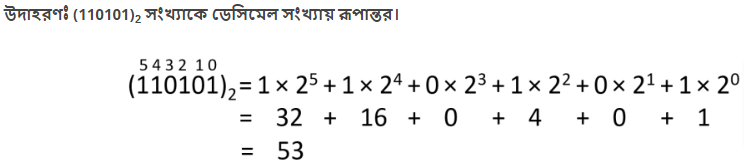
সুতরাং (110101)2 = (53)10
উদাহরণঃ (.1010)2 সংখ্যাকে ডেসিমেল সংখ্যায় রূপান্তর।
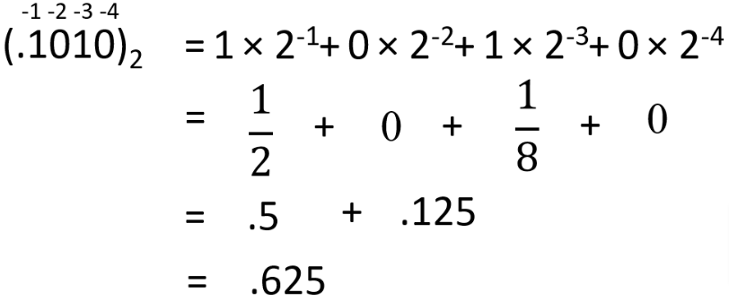
সুতরাং (.1010)2 = (.625)10
অক্টাল সংখ্যাকে ডেসিমেল সংখ্যায় রূপান্তরঃ
উদাহরণঃ (375)8 সংখ্যাকে ডেসিমেল সংখ্যায় রূপান্তর।
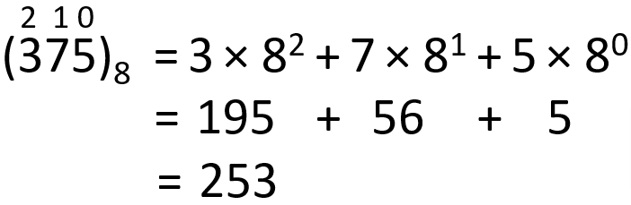
সুতরাং (375)8 = (253)10
© Sajedul Islam Tushar
উদাহরণঃ (.125)8 সংখ্যাকে ডেসিমেল সংখ্যায় রূপান্তর।
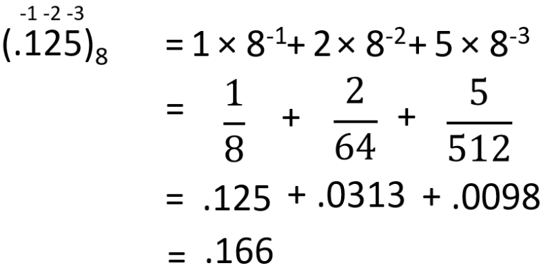
সুতরাং (.125)8 = (.166)10
হেক্সাডেসিমেল সংখ্যাকে ডেসিমেল সংখ্যায় রূপান্তরঃ
উদাহরণঃ (3FC)16 সংখ্যাকে ডেসিমেল সংখ্যায় রূপান্তর।
সুতরাং (3FC)16 = (1020)10
উদাহরণঃ (.2B)16 সংখ্যাকে ডেসিমেল সংখ্যায় রূপান্তর।
সুতরাং (.2B)16 = (.168)10
ডেসিমেল সংখ্যাকে অন্যান্য সংখ্যা পদ্ধতিতে রূপান্তর
পূর্ণ সংখ্যার ক্ষেত্রে-
- ধাপ-১ঃ সংখ্যাটিকে টার্গেট সংখ্যা পদ্ধতির বেজ(২/৮/১৬) দিয়ে ভাগ করতে হবে।
- ধাপ-২ঃ ধাপ-১ এর ভাগফলকে নিচে এবং ভাগশেষকে ডানে লিখতে হবে।
- ধাপ-৩ঃ ধাপ-১ এর ভাগফলকে পুনরায় টার্গেট সংখ্যা পদ্ধতির বেজ(২/৮/১৬) দিয়ে ভাগ করতে হবে।
© Sajedul Islam Tushar
- ধাপ-৪ঃ ধাপ-৩ এর ভাগফলকে নিচে ও ভাগশেষকে ডানে লিখতে হবে।
এই প্রক্রিয়া ততক্ষণ চলবে যতক্ষণ না ভাগফল শুন্য (0) হয়।
ভগ্নাংশের ক্ষেত্রে-
- ধাপ-১ঃ ভগ্নাংশটিকে টার্গেট সংখ্যা পদ্ধতির বেজ(২/৮/১৬) দিয়ে গুণ করতে হবে।
- ধাপ-২ঃ গুণ করার পর প্রাপ্ত গুনফলের যে পূর্ণ অংশটি থাকবে সেটিকে সংরক্ষণ করতে হবে। (পূর্ণ সংখ্যা না থাকলে 0 রাখতে হবে)।
- ধাপ-৩ঃ ধাপ-১ এর গুনফলের ভগ্নাংশটিকে পুনরায় টার্গেট সংখ্যা পদ্ধতির বেজ(২/৮/১৬) দিয়ে গুণ করতে হবে।
- ধাপ-৪ঃ ধাপ-৩ এর প্রাপ্ত গুনফলের যে পূর্ণ অংশটি থাকবে সেটিকে সংরক্ষণ করতে হবে। (পূর্ণ সংখ্যা না থাকলে 0 রাখতে হবে)।
এই প্রক্রিয়া ততক্ষণ চলবে যতক্ষণ না গুনফলের ভগ্নাংশটি শুন্য (0) হয়।
ডেসিমেল সংখ্যাকে বাইনারি সংখ্যায় রূপান্তরঃ
উদাহরণঃ (17)10 কে বাইনারিতে রূপান্তর।
সুতরাং (17)10 = (10001)2
উদাহরণঃ (0.125)10 কে বাইনারিতে রূপান্তর।
সুতরাং (0.125)10 = (.001)2
ডেসিমেল সংখ্যাকে অক্টাল সংখ্যায় রূপান্তরঃ
উদাহরণঃ (423)10 কে অক্টালে রূপান্তর।
© Sajedul Islam Tushar
সুতরাং (423)10 = (647)8
উদাহরণঃ (.150)10 কে অক্টালে রূপান্তর।

সুতরাং (.150)10 = (.11463…..)8
ডেসিমেল সংখ্যাকে হেক্সাডেসিমেল সংখ্যায় রূপান্তরঃ
উদাহরণঃ (423)10 কে হেক্সাডেসিমেলে রূপান্তর।
সুতরাং (423)10 = (1A7)16
উদাহরণঃ (.150)10 কে হেক্সাডেসিমেলে রূপান্তর।
সুতরাং (.150)10 = (.266…..)16
© Sajedul Islam Tushar
বাইনারি, অক্টাল ও হেক্সাডেসিমেল সংখ্যাসমূহের পারস্পরিক রূপান্তর।
অক্টাল সংখ্যাকে বাইনারি সংখ্যায় রূপান্তর:
পূর্ণ সংখ্যা এবং ভগ্নাংশের ক্ষেত্রে একই নিয়ম–
- ধাপ-১ঃঅক্ট্যাল সংখ্যার প্রতিটি ডিজিটের তিন বিট বাইনারি মান লিখতে হবে। [ 4 2 1 ফর্মুলা ব্যবহার করে ]
- ধাপ-২ঃ প্রতিটি ডিজিটের বাইনারি মান ৩-বিটের কম হলে বাম পার্শ্বে প্রয়োজনীয় সংখ্যক শুন্য বসিয়ে ৩-বিট পূর্ণ করতে হবে। প্রতিটি ডিজিটের তিন বিট লেখার কারণ, অক্টাল সংখ্যার প্রতিটি ডিজিটকে ম্যাক্সিমাম তিন বিটের মাধ্যমেই প্রকাশ করা যায়
- ধাপ-৩ঃঅবশেষে প্রাপ্ত বাইনারি মান গুলিকে পাশাপাশি সাজিয়ে লিখলে অক্ট্যাল সংখ্যাটির সমতূল্য বাইনারি সংখ্যা পাওয়া যাবে।
উদাহরণঃ (375.24)8 সংখ্যাকে বাইনারি সংখ্যায় রূপান্তর।
সুতরাং (375.24)8 = (011111101.010110)2
হেক্সাডেসিমেল সংখ্যাকে বাইনারি সংখ্যায় রূপান্তরঃ
পূর্ণ সংখ্যা এবং ভগ্নাংশের ক্ষেত্রে একই নিয়ম–
- ধাপ-১ঃহেক্সাডেসিমেল সংখ্যার প্রতিটি ডিজিটের চার বিট বাইনারি মান লিখতে হবে। [ 8 4 2 1 ফর্মুলা ব্যবহার করে ]
- ধাপ-২ঃ প্রতিটি ডিজিটের বাইনারি মান ৪-বিটের কম হলে বাম পার্শ্বে প্রয়োজনীয় সংখ্যক শুন্য বসিয়ে ৪-বিট পূর্ণ করতে হবে। প্রতিটি ডিজিটের চার বিট লেখার কারণ, হেক্সাডেসিমেল সংখ্যার প্রতিটি ডিজিটকে ম্যাক্সিমাম চার বিটের মাধ্যমেই প্রকাশ করা যায়
- ধাপ-৩ঃঅবশেষে প্রাপ্ত বাইনারি মান গুলিকে পাশাপাশি সাজিয়ে লিখলে হেক্সাডেসিমেল সংখ্যাটির সমতূল্য বাইনারি সংখ্যা পাওয়া যাবে।
উদাহরণঃ (35D.4F)16 সংখ্যাকে বাইনারি সংখ্যায় রূপান্তর।
সুতরাং (35D.4F)16 = (001101011101.01001111)2
বাইনারি সংখ্যাকে অক্টাল সংখ্যায় রূপান্তরঃ
© Sajedul Islam Tushar
- ধাপ-১ঃপূর্ণ সংখ্যার ক্ষেত্রে সংখ্যাটির ডান থেকে বাম দিকে ৩-বিট করে গ্রুপ করে নিতে হবে এবং ভগ্নাংশের ক্ষেত্রে বাম থেকে ডান দিকে ৩-বিট করে গ্রুপ করতে হবে ।
- ধাপ-২ঃ ৩-বিটের কম হলে পূর্ণ সংখ্যার ক্ষেত্রে বাম পার্শ্বে প্রয়োজনীয় সংখ্যক শুন্য বসিয়ে ৩-বিট পূর্ণ করতে হবে এবং ভগ্নাংশের ক্ষেত্রে ডান পার্শ্বে প্রয়োজনীয় সংখ্যক শুন্য বসিয়ে ৩-বিট পূর্ণ করতে হবে
- ধাপ-৩ঃপূর্নাংশের ক্ষেত্রে বাম দিকে গ্রুপ করার কারণ সর্ব বামে অতিরিক্ত শূন্য বসালে মানের কোন পরিবর্তন হয় না অনুরূপ ভাবে ভগ্নাংশের ক্ষেত্রে ডান দিকে গ্রুপ করার কারণ সর্ব ডানে অতিরিক্ত শূন্য বসালে মানের কোন পরিবর্তন হয় না
- ধাপ-৪ঃঅতপর প্রতিটি ৩-বিট গ্রুপের আলাদা ভাবে অক্টাল মান লিখতে হবে। অবশেষে প্রাপ্ত অক্টাল মান গুলিকে পাশাপাশি সাজিয়ে লিখলে বাইনারি সংখ্যাটির সমতূল্য অক্টাল সংখ্যা পাওয়া যাবে।
উদাহরণঃ (10101011.1010011)2 সংখ্যাকে অক্টাল সংখ্যায় রূপান্তর।
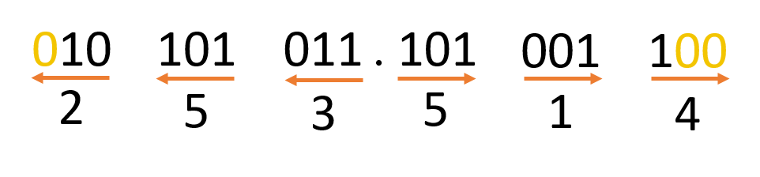
সুতরাং (10101011.1010011)2 =(253.514)8
বাইনারি সংখ্যাকে হেক্সাডেসিমেল সংখ্যায় রূপান্তরঃ
- ধাপ-১ঃপূর্ণ সংখ্যার ক্ষেত্রে সংখ্যাটির ডান থেকে বাম দিকে ৪-বিট করে গ্রুপ করে নিতে হবে এবং ভগ্নাংশের ক্ষেত্রে বাম থেকে ডান দিকে ৪-বিট করে গ্রুপ করতে হবে ।
- ধাপ-২ঃ ৪-বিটের কম হলে পূর্ণ সংখ্যার ক্ষেত্রে বাম পার্শ্বে প্রয়োজনীয় সংখ্যক শুন্য বসিয়ে ৪-বিট পূর্ণ করতে হবে এবং ভগ্নাংশের ক্ষেত্রে ডান পার্শ্বে প্রয়োজনীয় সংখ্যক শুন্য বসিয়ে ৪-বিট পূর্ণ করতে হবে
- ধাপ-৩ঃপূর্নাংশের ক্ষেত্রে বাম দিকে গ্রুপ করার কারণ সর্ব বামে অতিরিক্ত শূন্য বসালে মানের কোন পরিবর্তন হয় না অনুরূপ ভাবে ভগ্নাংশের ক্ষেত্রে ডান দিকে গ্রুপ করার কারণ সর্ব ডানে অতিরিক্ত শূন্য বসালে মানের কোন পরিবর্তন হয় না
- ধাপ-৪ঃঅতপর প্রতিটি ৪-বিট গ্রুপের আলাদা ভাবে হেক্সাডেসিমেল মান লিখতে হবে। অবশেষে প্রাপ্ত হেক্সাডেসিমেল মান গুলিকে পাশাপাশি সাজিয়ে লিখলে বাইনারি সংখ্যাটির সমতূল্য হেক্সাডেসিমেল সংখ্যা পাওয়া যাবে।
উদাহরণঃ (10101011.1010011)2 সংখ্যাকে অক্টাল সংখ্যায় রূপান্তর।
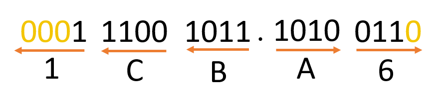
সুতরাং (0111001011.1010011)2 = (1CB.A6)16
© Sajedul Islam Tushar
বাইনারি যোগ - Binary Addition
- ধাপ-১ঃপ্রথমে সর্বডানের কলাম যোগ করতে হয়।
- ধাপ-২ঃ প্রথম কলাম যোগ করে যোগফল প্রথম কলামের নিচে লিখতে হয়। যদি ক্যারি উৎপন্ন হয় তবে তা পরের কলামে বসাতে হয়।
- ধাপ-৩ঃদ্বিতীয় ধাপে carry উৎপন্ন হলে তা পরের কলামে লিখতে হবে বা পরের কলামে কোনো ডিজিট থাকলে তার সাথে যোগ করতে হবে। এই প্রক্রিয়া চলতে থাকবে যতক্ষণ পর্যন্ত বাম দিকে কোনো কলাম না থাকে।
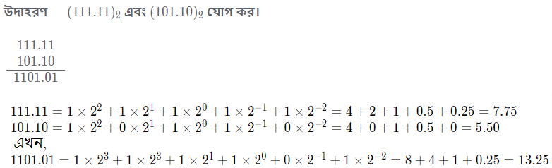
বাইনারি বিয়োগ - Binary Subtraction
- ধাপ-১ঃবাইনারি বিয়োগের সময় বিয়োজক এর LSD (Least Significant Digit) থেকে বিয়োজ্য (Subtracted) এর LSD বিয়োগ করে বিয়োগের LSD বসাতে হবে।
- ধাপ-২ঃ LSD দ্বারা বিয়োগ করে যদি carry থাকে তা পরের কলামের বিয়োজ্যের সাথে যোগ করে বিয়োজক থেকে বিয়োগ করতে হবে।
- ধাপ-৩ঃযদি দ্বিতীয় ধাপে carry থাকে তা পরবর্তী কলামের বিয়োজ্যের সাথে যোগ করে বিয়োগ করতে হবে।
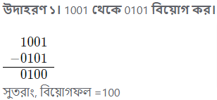
চিহ্নযুক্ত সংখ্যা (১ এর পরিপূরক ও ২ এর পরিপূরক )
বাইনারি পদ্ধতিতে চিহ্নযুক্ত সংখ্যা উপস্থাপনের জন্য প্রকৃত মানের পূর্বে একটি অতিরিক্ত বিট যোগ করা হয়। এ অতিরিক্ত বিটকে চিহ্ন বিট বলে। চিহ্ন বিট 0 হলে সংখ্যাটি ধনাত্মক এবং চিহ্নবিট ১ হলে সংখ্যাটিকে ঋণাত্মক ধরা হয়।
চিহ্নযুক্ত সংখ্যার উপস্থাপনাঃ কম্পিউটার সিস্টেমে ঋণাত্মক(-) চিহ্ন যুক্ত সংখ্যা বা ঋণাত্মক সংখ্যা উপস্থাপনার জন্য তিনটি পদ্ধতি আছে। যথাঃ
- প্রকৃত মান গঠন (Signed magnitude form)
- ১ এর পরিপূরক গঠন (1’s Complement form)
- ২ এর পরিপূরক গঠন (2’s Complement form)
© Sajedul Islam Tushar
উপরিউক্ত তিনটি পদ্ধতিতে চিহ্ন যুক্ত সংখ্যা উপস্থাপনার জন্য রেজিস্টার সম্পর্কে প্রাথমিক ধারণা থাকতে হবে। রেজিস্টার হলো একগুচ্ছ ফ্লিপ-ফ্লপ এবং গেইটের সমন্বয়ে গঠিত সার্কিট যা অস্থায়ী মেমোরি হিসেবে কাজ করে। এর প্রত্যেকটি ফ্লিপ-ফ্লপ একটি করে বাইনারি বিট সংরক্ষণ করতে পারে। n বিটের একটি রেজিস্টার n বিটের বাইনারি তথ্য ধারণ করতে পারে। অর্থাৎ ৮-বিট রেজিস্টার, ১৬- বিট রেজিস্টার, ৩২-বিট রেজিস্টার ইত্যাদি যথাক্রমে ৮, ১৬, ৩২ বিট তথ্য ধারণ করতে পারে।
৮-বিট রেজিস্টারের ক্ষেত্রে সর্বডানের ৭-বিট হল ডেটা বিট এবং সর্ব বামের বিটটি চিহ্ন বিট। একইভাবে ১৬-বিট রেজিস্টারের ক্ষেত্রে সর্বডানের ১৫-বিট হল ডেটা বিট এবং সর্ব বামের বিটটি চিহ্ন বিট। অর্থাৎ n-bit রেজিস্টারের ক্ষেত্রে সর্বডানের n-1 বিট হল ডেটা বিট এবং সর্ব বামের বিটটি চিহ্ন বিট হিসেবে ব্যবহৃত হয়।
কখন কত বিট রেজিস্টার ব্যবহার করতে হবে তা নির্ভর করে প্রদত্ত সংখ্যার উপর। যদি একটি সংখ্যার ডেটা বিট ৭ বিটের বেশি হয় তখন ১৬ রেজিস্টার ব্যবহার করতে হবে এবং ডেটা বিট ১৫ বিটের বেশি হলে ৩২ রেজিস্টার ব্যবহার করতে হবে।
এ সব প্রক্রিয়ায় +5 এবং -5 কে ৮-বিট রেজিস্টারে উপস্থাপন করতে হবে।
প্রকৃত মান গঠন (Signed magnitude form)
প্রকৃত মান গঠন প্রক্রিয়ায় কোন ধনাত্মক ও ঋণাত্মক সংখ্যা ৮-বিট রেজিস্টারে উপস্থাপনের ক্ষেত্রে রেজিস্টারের সর্বডানের ৭-বিট ডেটা বিট এবং সর্ব বামের বিটটি চিহ্ন বিট হিসেবে ব্যবহৃত হয়। এক্ষেত্রে ধনাত্মক চিহ্নের জন্য চিহ্ন বিট 0 এবং ঋণাত্মক চিহ্নের জন্য চিহ্ন বিট 1। এই প্রক্রিয়ায় +০ এবং -০ এর ভিন্ন ভিন্ন মান পাওয়া যায় যা বাস্তবের সাথে অসামঞ্জস্যপূর্ণ। প্রকৃত মান গঠন সহজ হলেও এর জন্য জটিল বর্তনীর প্রয়োজন হয়।
১ এর পরিপূরক গঠন
কোন বাইনারি সংখ্যার প্রতিটি বিটকে পূরক করে বা উল্টিয়ে যে সংখ্যা পাওয়া যায় তাকে ১ এর পরিপূরক বলা হয়। এই প্রক্রিয়ায় ধনাত্মক সংখ্যার উপস্থাপন প্রকৃত মান গঠনের মতই। অর্থাৎ ধনাত্মক চিহ্নযুক্ত সংখ্যার ক্ষেত্রে ধনাত্মক চিহ্নের জন্য চিহ্ন বিট 0 এবং বাকি ৭-বিট ব্যবহৃত হয় ডেটা বিটের জন্য। ঋণাত্মক চিহ্নযুক্ত সংখ্যার মান নির্ণয়ের জন্য ধনাত্মক চিহ্নযুক্ত সংখ্যার মান নির্ণয় করতে হয়। তারপর চিহ্ন-বিট সহ সবগুলো বিটকে উল্টিয়ে(অর্থাৎ 0 থাকলে ১ এবং ১ থাকলে 0 হয়) ঋণাত্মক চিহ্নযুক্ত সংখ্যার মান নির্নয় করা হয়। এই প্রক্রিয়াতেও +০ এবং -০ এর ভিন্ন ভিন্ন মান পাওয়া যায় যা বাস্তবের সাথে অসামঞ্জস্যপূর্ণ।
© Sajedul Islam Tushar
২ এর পরিপূরক
কোন বাইনারি সংখ্যার ১ এর পরিপূরকের সাথে বাইনারি ১ যোগ করলে যে সংখ্যা পাওয়া যায় তাকে ২ এর পরিপূরক বলা হয়।এই প্রক্রিয়াতেও ধনাত্মক সংখ্যার উপস্থাপন প্রকৃত মান গঠনের মতই। অর্থাৎ ধনাত্মক চিহ্নযুক্ত সংখ্যার ক্ষেত্রে ধনাত্মক চিহ্নের জন্য চিহ্ন বিট 0 এবং বাকি ৭-বিট ব্যবহৃত হয় ডেটা বিটের জন্য। ঋণাত্মক চিহ্নযুক্ত সংখ্যার মান নির্ণয়ের জন্য প্রথমে সংখ্যাটির ধনাত্মক সংখ্যার মান নির্ণয় করতে হয়। তারপর ধনাত্মক সংখ্যার মানের ১ এর পরিপূরক করতে হয়। শেষে ১ এর পরিপূরকে প্রাপ্ত মানের সাথে বাইনারি ১ যোগ করতে হয়। ২ এর পরিপূরক গঠনে +০ এবং -০ এর মান একই যা বাস্তবের সাথে সামঞ্জস্যপূর্ণ। এই প্রক্রিয়ার বিভিন্ন সুবিধার কারণে ডিজিটাল ডিভাইসে ব্যপকভাবে ব্যবহৃত হচ্ছে।
২ এর পরিপূরক পদ্ধতিতে যোগ - বিয়োগঃ
© Sajedul Islam Tushar
অক্টাল সংখ্যার যোগ
অক্টাল সংখ্যায় একাধিক অংকের যোগফল ভিত্তি ৮ এর সমান বা তার বেশি হলে যোগফল থেকে ভিত্তি ৮ বিয়োগ করতে হবে (এক্ষেত্রে যোগফল যতক্ষণ না ৮এর কম হবে ততক্ষণ বিয়োগ করতে হবে)। যতবার বিয়োগ করা হবে ক্যারি হবে তত।
হেক্সাডেসিমেল সংখ্যার যোগ
হেক্সাডেসিমেল সংখ্যায় একাধিক অংকের যোগফল ভিত্তি ১৬ এর সমান বা তার বেশি হলে যোগফল থেকে ভিত্তি ১৬ বিয়োগ করতে হবে (এক্ষেত্রে যোগফল যতক্ষণ না ১৬ এর কম হবে ততক্ষণ বিয়োগ করতে হবে)। যতবার বিয়োগ করা হবে ক্যারি হবে তত।
© Sajedul Islam Tushar
কোড(Code) কী?
কম্পিউটার সিস্টেমে ব্যবহৃত প্রতিটি বর্ণ, সংখ্যা বা বিশেষ চিহ্নকে পৃথক পৃথকভাবে সিপিইউকে বোঝানোর জন্য বাইনারি বিট (০ বা ১) কে বিভিন্নভাবে সাজিয়ে যে অদ্বিতীয় সংকেত তৈরি করা হয় তাকে কোড বলে ।
Note: কম্পিউটারে বিভিন্ন ধরনের কোড ব্যবহার হয়ে থাকে:
১। অক্টাল কোড (3 bit) ২। হেক্সা–ডেসিমাল কোড (4 bit) ৩। BCD কোড (4 bit)
Alphanumeric Code: ১। ASCII Code (8 bit) ২। EBCDIC কোড (8 bit) ৩। Unicode (16 bit)
বিসিডি (BCD) কোড কী?
BCD এর পূর্ণরূপ হলো Binary Coded Decimal দশমিক সংখ্যা পদ্ধতিত প্রতিটি সংখ্যাকে বাইনারি সংখ্যার ০, ১ এ প্রকাশের জন্য বিসিডি কোড ব্যবহৃত হয়। BCD কোড ৪ বিটের হয়ে থাকে।
Note: ৮৪২১ কে NBCD (Natural BCD Code) কোড বলা হয়।
EBCDIC কোড কী?
Extended Binary Coded Decimal Interchange Code (EBCDIC) হলো বিসিডি (BCD) কোডের একটি উন্নত রূপ। 4 বিটের BCD কোডকে বর্ধিত করে সাধারনত EBCDIC কোড তৈরি করা হয়। EBCDIC কোড ৮ বিটের হয়ে থাকে।
Note: ১৯৬৩-১৯৬৪ সালে আইবিএম ৮ বিটের EBCDIC কোড চালু করে। IBM, Mainframe, Mini Computer এ EBCDIC কোড ব্যবহার করা হয়।
আলফা নিউমেরিক কোড (Alphanumeric Code) কী?
বর্ণ, অঙ্ক, এবং বিভিন্ন গাণিতিক চিহ্ন সহ (+, -, ×, /) আরও কতগুলো বিশেষ চিহ্নের (! @, #, %, &, 5) জন্য ব্যবহৃত কোডকে আলফানিউমেরিক কোড বলে।
ASCII কোড কী?
ASCII হলো ৮ বিটের একটি আলফানিউমেরিক কোড। ASCII এর পূর্ণ রূপ হচ্ছে American Standard Code for Information Interchange। সাধারনত কিবোর্ড, মাউস, প্রিন্টার ইত্যাদির মধ্যে আলফানিউমেরিক ডেটা আদান প্রদানের জন্য ASCII Code ব্যবহার করা হয়।
Note: ASCII Code আবিষ্কার করেন রবাট উইলিয়াম বিমার। প্রথম যে ASCII Code আবিষ্কৃত হয় সেটি ছিল ৭ বিটের। এই ৭ বিটের বামের প্রথম ৩টি বিটকে জোন বিট এবং পরের ৪টি বিটকে সংখ্যা সূচক বিট বলা হতো। পরবর্তীতে ASCII Code এর ৭ বিটের সাথে অতিরিক্ত একটি বিট যুক্ত করে ৮ বিটের ASCII Code তৈরি কর হয়। বর্তমানে ASCII-৮ কোড প্রচলিত।
Unicode কী?
ইউনিকোড এর পূর্ণরূপ হলো – Universal Code। একে সার্বজনীন কোড বলা হয়। বিশ্বের সকল ছোট বড় ভাষাকে কম্পিউটারের কোডভুক্ত করার জন্য Apple Inc ও Xerox Corporation এর এক দল গবেষকরা মিলে ১৬ বিটের একটি কোড তৈরি করেছেন যাকে ইউনিকোড বলা হয়। বিভিন্ন ধরণের ক্যারেক্টার ও টেক্সটকে প্রকাশ করার জন্য ইউনিকোড ব্যবহার করা হয়। এর মাধ্যমে ২১৬ = ৬৫৫৩৬ টি অদ্ববিতীয় চিহ্নকে নির্দিষ্ট করা যায়।
© Sajedul Islam Tushar
বুলিয়ান অ্যালজেবরা (Boolean Algebra) কী?
জর্জ বুলি সত্য এবং মিথ্যা এ দুটি স্তরের উপর ভিত্তি করে গনিতের যে নতুন শাখা উম্মচোন করেছেন তাকে বুলিয়ান অ্যালজেবরা বলে। বুলিয়ান অ্যালজেবরা সত্য ও মিথ্যাকে বাইনারির ১ এবং ০ দ্বারা পরিবর্তন করে কম্পিউটারের সমস্ত গাণিতিক সমস্যার সমাধান বুলিয়ান অ্যালজেবরার সাহায্যে করা সম্ভব হয়।
Note: জর্জ বুলি (George Boole)১৮৫৪ সালে বুলিয়ান অ্যালজেবরা আবিষ্কার করেন।
বুলিয়ান চলক কি?
বুলিয়ান-বীজগনিতে যে সকল রাশির মান সময়ের সাথে ভিন্ন ভিন্ন হতে পারে তাকে বুলিয়ান চলক বলে। যেমন- A একটি বুলিয়ান চলক হলে এই চলকের মান শুধুমাত্র সত্য (1) এবং মিথ্যা (0) হতে পারে।
বুলিয়ান পূরক কি?
বুলিয়ান অ্যালজেবরায় কোন চলকের মান শুধুমাত্র 1 এবং 0 হতে পারে। এই 0 এবং 1 কে একে অপরের পরিপূরক বলা হয়। 0 এর পূরক 1 এবং 1 এর পূরক 0
বুলিয়ান স্বতঃসিদ্ধ কী?
বুলিয় বীজগণিতে শুধু যোগ আর গুনের মাধ্যমে সকল অঙ্ক সমাধান করা হয়ে থাকে। বুলিয়ান বীজগণিতে যোগ ও গুনের ক্ষেত্রে কতকগুলো বিশেষ নিয়ম মেনে চলে। এই বিশেষ নিয়ম গুলোকে বুলিয়ান স্বতঃসিদ্ধ বলে।
বুলিয়ান দ্বৈতনীতি (Boolean Duality Principle) কী?
বুলিয়ান অ্যালজেবরায় ব্যবহৃত সকল উপপাদ্য বা সমীকরণ যে দুইটি নিয়ম মেনে একটি বৈধ সমীকরণ থেকে অন্য একটি বৈধ সমীকরণ নির্ণয় করা যায় তাকে বুলিয়ান দ্বৈত নীতি বলে। বুলিয়ান অ্যালজেবরায় যে সকল উপপাদ্য অর (OR) আর অ্যান্ড (AND) এবং 0 ও 1 এর সাথে সম্পর্কযুক্ত সে সকল উপপাদ্য বা সমীকরণ দ্বৈত নীতি মেনে চলে। এই নিয়ম দুইটি হলো:
১. 0 এবং 1 পরস্পর বিনিময় করে অর্থাৎ 0 এর পরিবর্তে 1 এবং 1 এর পরিবর্তে 0 ব্যবহার করে।
২. অর (+) এবং অ্যান্ড (.) পরস্পর বিনিময় করে অর্থাৎ অর এর (+) পরিবর্তে অ্যান্ড (.) এবং অ্যান্ড এর (.) পরিবর্তে অর (+) ব্যবহার করে।
উদাহরণঃ 1 + 1 = 1 সমীকরণে 1-এর পরিবর্তে 0 এবং (+) এর পরিবর্তে (.) বসিয়ে পাই 0.0 = 0 এটিও একটি বৈধ সমীকরণ। আবার 0.0 = 0 সমীকরণে 0-এর পরিবর্তে 1 এবং (.)-এর পরিবর্তে (+) বসিয়ে পাই 1 + 1 =1 এটিও একটি বৈধ সমীকরণ।
ডি মরগ্যানের উপপাদ্য
প্রথম উপপাদ্যঃ যেকোন সংখ্যক চলকের যৌক্তিক যোগের পূরক বা কমপ্লিমেন্ট , প্রত্যেক চলকের পূরক বা কমপ্লিমেন্টের যৌক্তিক গুণের সমান।
দ্বিতীয় উপপাদ্যঃ যেকোন সংখ্যক চলকের যৌক্তিক গুণের পূরক বা কমপ্লিমেন্ট, প্রত্যেক চলকের পূরক বা কমপ্লিমেন্টের যৌক্তিক যোগের সমান।
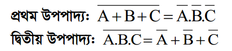
© Sajedul Islam Tushar
বুলিয়ান উপপাদ্য
১৯৪০ সালে E.V Huntington বুলিয়ান অ্যালজেবরার জন্য কিছু উপপাদ্য তৈরি করেন, যার সাহায্যে বুলিয়ান অ্যালজেবরার জটিল সমীকরণকে সরলীকরণ করা যায়। এই উপপাদ্যগুলোকে হানটিংটন উপপাদ্য বলা হয়।
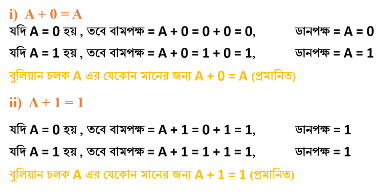
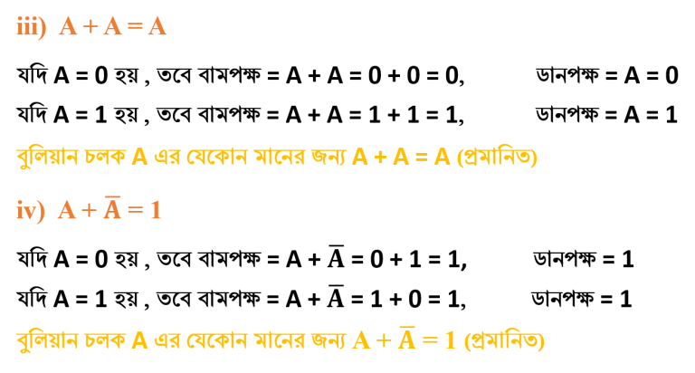
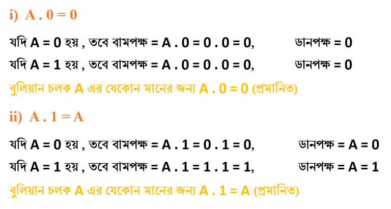
© Sajedul Islam Tushar
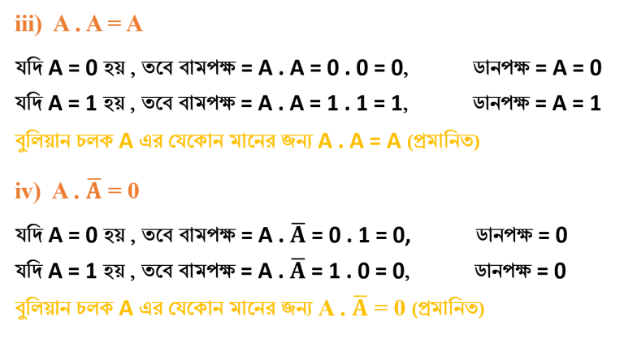
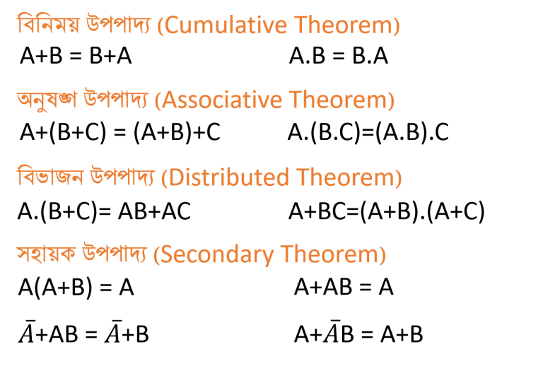
সত্যক সারণি (Truth table) কী?
যে সারণির মাধ্যমে বুলিয় বীজগণিতের বিভিন্ন ইনপুটের মানগুলোর জন্য সম্ভাব্য আউটপুট মান দেখানো হয় তাকে সত্যক সারণি বলে। সত্যক সারণিতে ইনপুট সংখ্যা n সংখ্যক হলে আউটপুট হবে 2 n সংখ্যক।
A ও B দুইটি চলকের জন্য ডি মরগ্যানের উপপাদ্য দুটি সত্যক সারণির সাহায্যে প্রমাণঃ
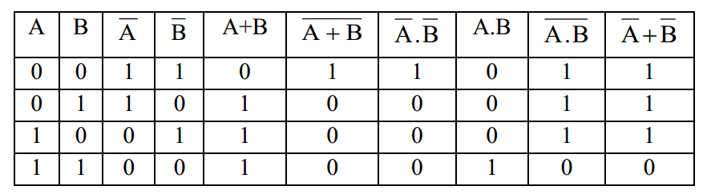
© Sajedul Islam Tushar
A , B ও C তিনটি চলকের জন্য ডি মরগ্যানের উপপাদ্যের প্রমাণ:
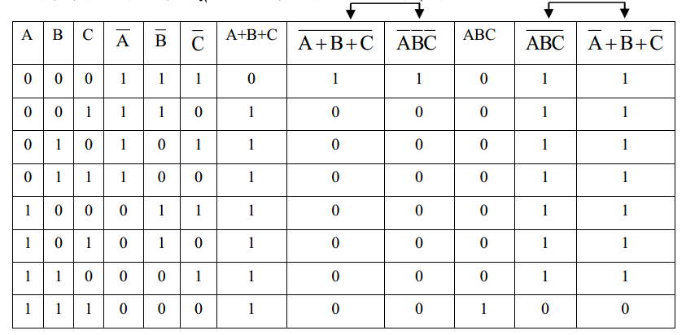
বুলিয়ান ফাংশন বা লজিক ফাংশন সরলীকরণ:
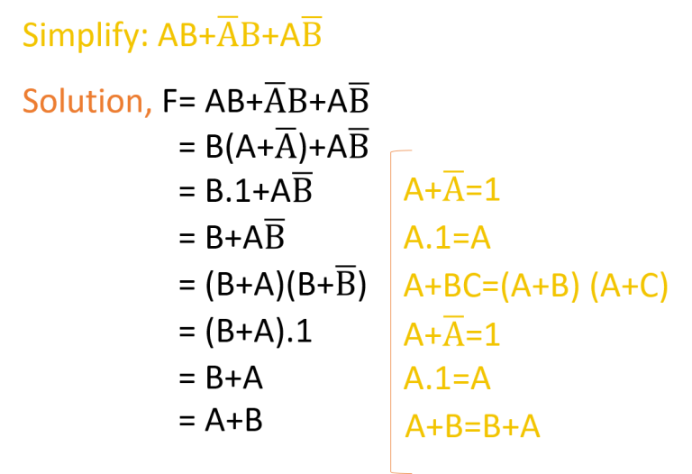
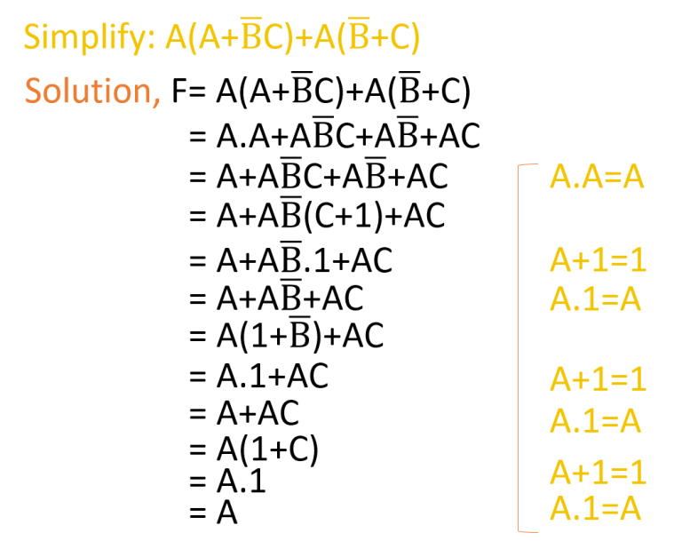
© Sajedul Islam Tushar
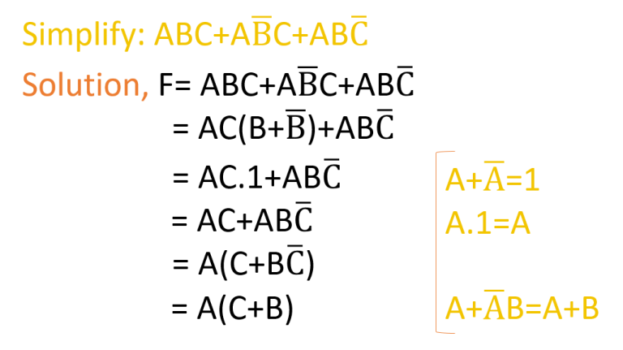
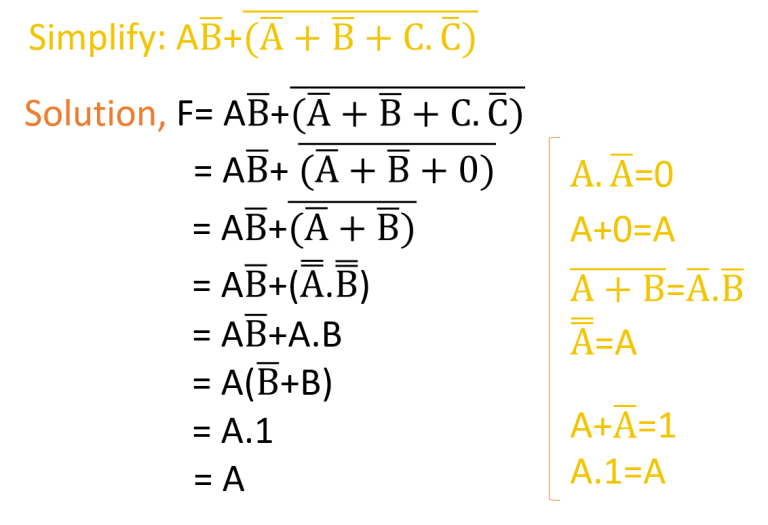
LOGIC GATE - লজিক গেইট
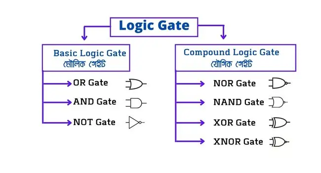
Note: ডিজিটাল ডিভাইস গুলোতে আরো এক ধরনের গেইট ব্যবহার করা হয় যাকে Buffer gate (বাফার গেইট) বলে। মূলত সিগনাকে এক বর্তনী থেকে আরেক বর্তনীতে পাঠানোর সময় সিগনালের শক্তি বৃদ্ধি করতে বাফার গেইট ব্যবহার করা হয়।
NOT gate এর মত বাফার গেইটের ও একটি ইনপুট ও একটি আউটপুট থাকে। তবে Buffer gate এর ইনপুটে যে মান দেওয়া হয় আউটপুটেও সেই একই মান পাওয়া যায়। ২ টি NOT gate কে একসাথে পর পর সংযুক্ত করে Buffer gate তৈরি করা যায়।
© Sajedul Islam Tushar
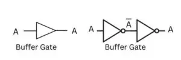
Basic Logic Gate( মৌলিক গেইট)
OR GATE
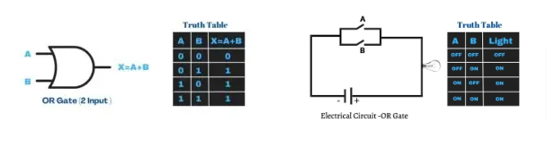
OR Gate হলো যৌক্তিক যোগের গেইট। বুলিয়ান অ্যালজেবরার যোগের কাজ সম্পাদনের জন্য OR Gate ব্যবহার করা হয় । OR Gate এ সাধারনত দুই বা ততোধিক ইনপুট থাকে এবং আউটপুট থাকে একটি। অর্থাৎ যে আধুনিক বর্তনীতে দুই বা ততোধিক ইনপুট দিয়ে একটি মাত্র আউটপুট পাওয়া যায় যেখানে আউটপুটটি হয় ইনপুট গুলোর যৌক্তিক যোগের সমান, তাকে OR Gate বলে। OR Gate এ কোন একটি ইনপুট ১ হলে অউটপুট হয় ১ আর যখন সবগুলো ইনপুট ০ হয় তখন আউটপুট হয় ০।
AND GATE
AND Gate হলো যৌক্তিক গুনের গেইট। বুলিয়ান অ্যালজেবরার গুনের কাজ সম্পাদন করার জন্য AND Gate ব্যবহার করা হয় । AND Gate এ সাধারনত দুই বা ততোধিক ইনপুট থাকে এবং আউটপুট থাকে একটি। অর্থাৎ যে আধুনিক বর্তনীতে দুই বা ততোধিক ইনপুট দিয়ে একটি মাত্র আউটপুট পাওয়া যায় যেখানে আউটপুটটি হয় ইনপুট গুলোর যৌক্তিক গুনের সমান, তাকে AND Gate বলে। AND Gate এ কোন একটি ইনপুট ০ হলে অউটপুট হয় ০ আর যখন সবগুলো ইনপুট ১ হয় তখন আউটপুট হয় ১।
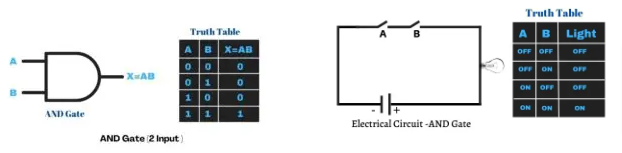
NOT GATE
© Sajedul Islam Tushar
বুলিয়ান অ্যালজেবরার যৌক্তিক পূরকের কাজ সম্পাদনের জন্য যে লজিক গেইট ব্যবহার করা হয় তাকে NOT Gate বলে। NOT Gate এ একটি ইনপুট ও একটি আউটপুট থাকে। যে আধুনিক বর্তনীতে একটি মাত্র ইনপুট ও একটি মাত্র আউটপুট থাকে এবং যেখানে আউটপুটি হয় ইনপুটের যৌক্তিক বিপরীত তাকে NOT Gate বলে। NOT Gate এ ইনপুট ০ হলে আউটপুট হয় ১ আর ইনপুট ১ হলে আউটপুট হয় ০। NOT Gate কে ইনভার্টারও বলা হয়।
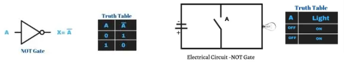
Universal Logic Gate (সর্বজনীন গেইট)
NOR GATE
OR Gate ও NOT Gate এর সম্মনয়ে NOR Gate তৈরি করা হয়। OR Gate এর আউটপুটকে NOT Gate এর মধ্যে দিয়ে প্রবাহিত করলে সেটি NOR Gate এর কাজ করে। NOR Gate এ ইনপুট সংখ্যা ২ বা তার অধিক হয়ে থাকে। অর্থাৎ যে আধুনিক বর্তনীতে দুই বা ততোধিক ইনপুট দিয়ে একটি মাত্র আউটপুট পাওয়া যায় যেখানে কোন একটি ইনপুট ১ হলে আউটপুট হয় ০ এবং অন্য সকল ক্ষেত্রে আউটপুট হয় ১ তাকে NOR Gate গেইট বলে। NOR Gate, OR Gate এর বিপরীত কাজ করে।
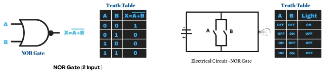
NAND GATE
AND Gate ও NOT Gate এর সম্মনয়ে NAND Gate তৈরি করা হয়। AND Gate এর আউটপুটকে NOT Gate এর মধ্যে দিয়ে প্রবাহিত করলে সেটি NAND Gate এর কাজ করে। NAND Gate এ ইনপুট সংখ্যা ২ বা তার অধিক হয়ে থাকে। অর্থাৎ যে আধুনিক বর্তনীতে দুই বা ততোধিক ইনপুট দিয়ে একটি মাত্র আউটপুট পাওয়া যায় যেখানে কোন একটি ইনপুট ০ হলে আউটপুট হয় ১ এবং অন্য সকল ক্ষেত্রে আউটপুট হয় ০ তাকে NAND Gate গেইট বলে। NAND Gate, AND Gate এর বিপরীত কাজ করে।

© Sajedul Islam Tushar
Exclusive Logic Gate(বিশেষ গেইট)
XOR Gate
XOR Gate কে Exclusive Logic Gate(বিশেষ গেইট) বলা হয়। একে যৌগিক গেইট ও বলা হয়। কারন তিনটি মৌলিক গেইট OR, AND, NOT Gate এর সম্মনয়ে এই গেইট তৈরি করা হয়। XOR Gate গেইটে দুই বা ততোধিক ইনপুট থাকে। যে আধুনিক বর্তনীতে দুই বা ততোধিক ইনপুট দিয়ে একটি মাত্র আউটপুট পাওয়া যায় যেখানে বিজোড় সংখ্যক ১ ইনপুটের জন্য আউটপুট হয় ১ এবং অন্য সকল ক্ষেত্রে আউটপুট হয় ০ তাকে XOR Gate গেইট বলে। আধুনিক বর্তনীতে মূলত একিভূত বর্তনী আকারে এই গেইট ব্যবহার করা হয়।
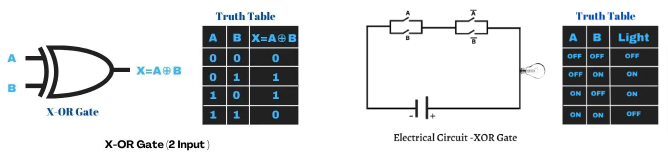
X-NOR Gate
XOR Gate এর সাথে NOT Gate সংযুক্ত করে তৈরি X-NOR Gate করা হয়। XNOR Gate ও মূলত একটি যৌগিক গেইট। তিনটি মৌলিক গেইট OR, AND, NOT Gate এর সম্মনয়ে এই গেইট তৈরি করা হয়। XNOR Gate গেইটে দুই বা ততোধিক ইনপুট থাকে। যে আধুনিক বর্তনীতে দুই বা ততোধিক ইনপুট দিয়ে একটি মাত্র আউটপুট পাওয়া যায় যেখানে বিজোড় সংখ্যক ১ ইনপুটের জন্য আউটপুট হয় ০ এবং অন্য সকল ক্ষেত্রে আউটপুট হয় ১ তাকে XNOR গেইট বলে। XNOR গেইট XOR Gate এর বিপরীত কাজ করে।
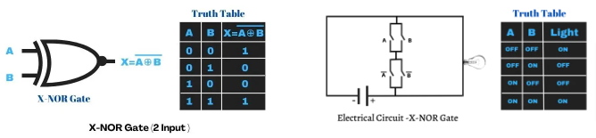
এনকোডার (Encoder) কি?
এনকোডার হচ্ছে এমন এক ধরনের লজিক সার্কিট, যা আমাদের ভাষাকে কম্পিউটারের বোধগম্য যান্ত্রিক ভাষায় রূপান্তর করে। অন্যভাবে বলা যায় যে সমবায় সার্কিট আনকোডেড ডেটাকে কোডেড ডেটায় রূপান্তর করে তাকে এনকোডার বলে । এনকোডারে ইনপুটের সংখ্যা 2 n হলে এর আউটপুট সংখ্যা হবে n এবং ইনপুট লাইনে যে কোনো একটি ইনপুট 1 হলে বাকী সব ইনপুট হবে 0 ।
© Sajedul Islam Tushar
ডিকোডার (Decoder) কী?
ডিকোডার এমন একটি লজিক সার্কিট, যা কোন কোড (Code)-কে ডিকোড (Decode) করতে পারে। ইহা এমন একটি ইলেকট্রনিক যন্ত্র বা ডিভাইস যা কম্পিউটারের বোধগম্য ভাষাকে মানুষের বোধগম্য ভাষায় রূপান্তর করে। ডিকোডার ইনপুটের সংখ্যা n হলে তার আউটপুট সংখ্যা = 2 n হবে এবং আউটপুট লাইনে যে কোনো একটি আউটপুট 1 হলে বাকী সব আউটপুট 0 হবে।
তিন ইনপুট(A, B & C) বিশিষ্ট গেটঃ
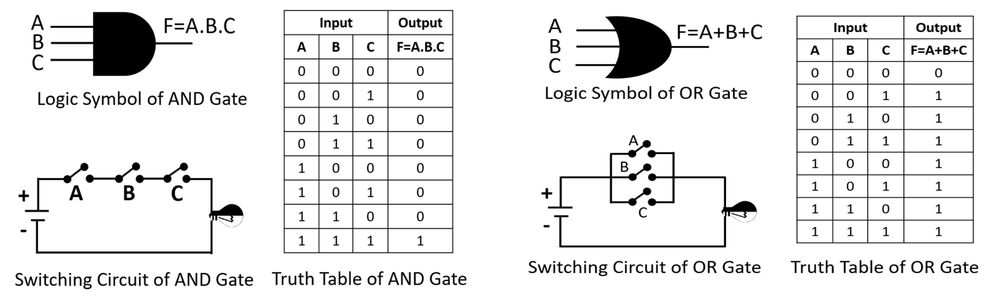
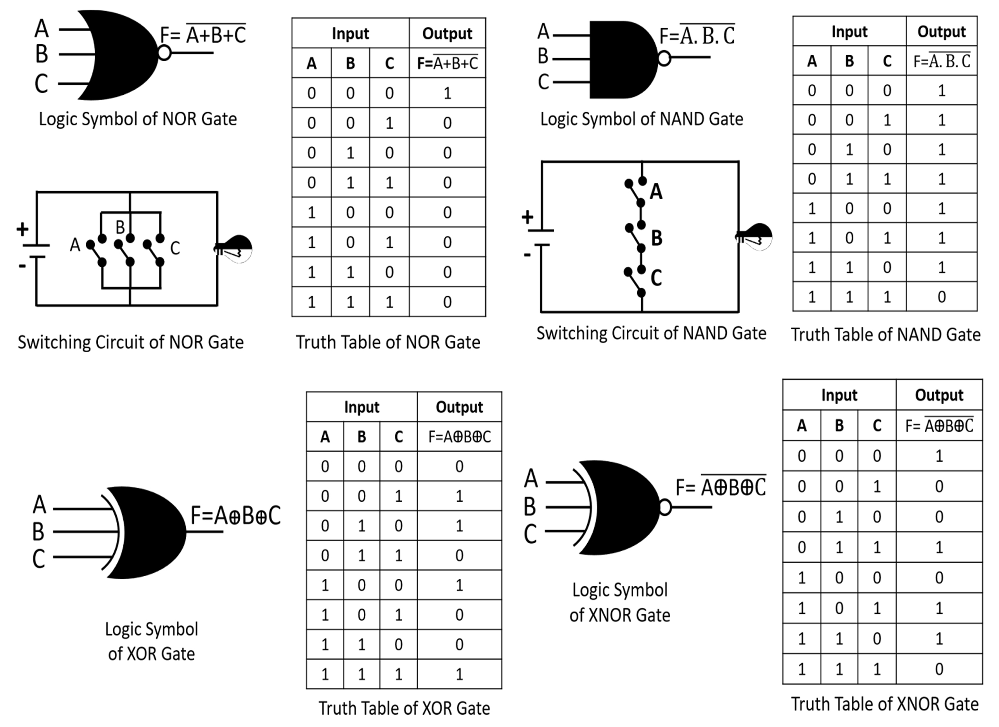
© Sajedul Islam Tushar
.png)
.png)
© Sajedul Islam Tushar
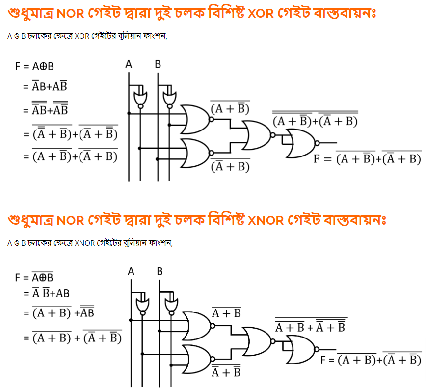
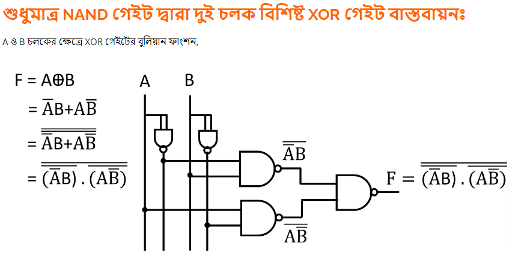
© Sajedul Islam Tushar


ফ্লীপফ্লপ (Flip-Flop) কী?
ফ্লিপ-ফ্লপ লজিক গেইট দ্বারা তৈরি এক ধরনের ডিজিটাল বর্তনী যা একটি বাইনারি বিট (0 বা 1) সংরক্ষণ করতে পারে। ফ্লিপ-ফ্লপের ইনপুটে কোনো ডেটা দিলে আউটপুটে তা অনির্দিষ্টকাল ধরে সংরক্ষিত থাকে। বিদ্যুৎ সরবরাহ বন্ধ না করলে অথবা ট্রিগার প্রদান করা না হলে ইনপুটের ডেটা সরিয়ে নিলেও আউটপুট অপরিবর্তিত থাকে।
Note: ফ্লিপ-ফ্লপের আরেকটি নাম ল্যাচ (Latch)। ফ্লিপ ফ্লপের ডেটা ধারণ ক্ষমতার জন্যে একে কম্পিউটার মেমোরির মূল উপাদান বলা হয়। প্রতিটি ফ্লিপ-ফ্লপে দুটি আউটপুট থাকে এবং এক বা একাধিক ইনপুট থাকে। আউটপুট দুটি সব সময়ই একটি হাই (ON) এবং অপরটি লো (OFF) অবস্থায় থাকে।
© Sajedul Islam Tushar
লজিক ফাংশন থেকে সার্কিট এবং সার্কিট থেকে লজিক ফাংশন
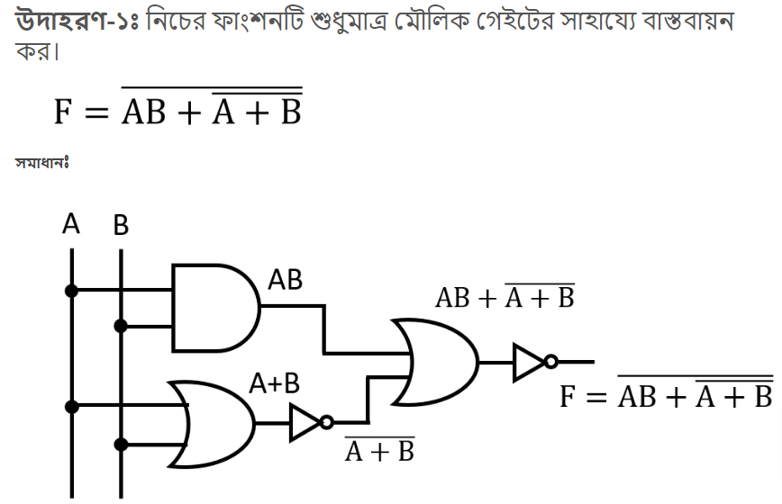
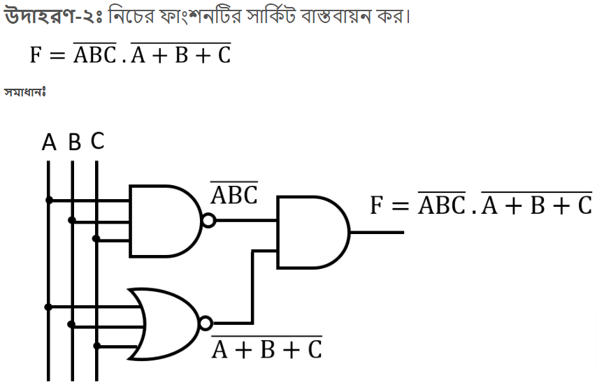
অ্যাডার (Adder) কী?
কম্পিউটার সকল গাণিতিক সমস্যার সমাধান যোগের মাধ্যমে করে থাকে। কম্পিউটারে যোগের কাজ সম্পন্ন করার জন্য যে সমবায় সার্কিট (Combination Circuit) ব্যবহার করে থাকে তাকে অ্যাডার সার্কিট বলে।
Note: কম্পিউটারে সাধারনত ২ ধরনের অ্যাডার সার্কিট ব্যবহার হয়ে থাকে : ১। Half Adder ২। Full Adder
লজিক সার্কিট থেকে লজিক ফাংশন তৈরি/বাস্তবায়নঃ
লজিক সার্কিট থেকে লজিক ফাংশন নির্নয় করে তা সরল করতে হতে পারে। লজিক সার্কিট থেকে সরলীকৃত ফাংশন নির্নয় এবং তা মৌলিক বা সার্বজনীন গেইট দ্বারা বাস্তবায়ন করতে হতে পারে।
© Sajedul Islam Tushar
 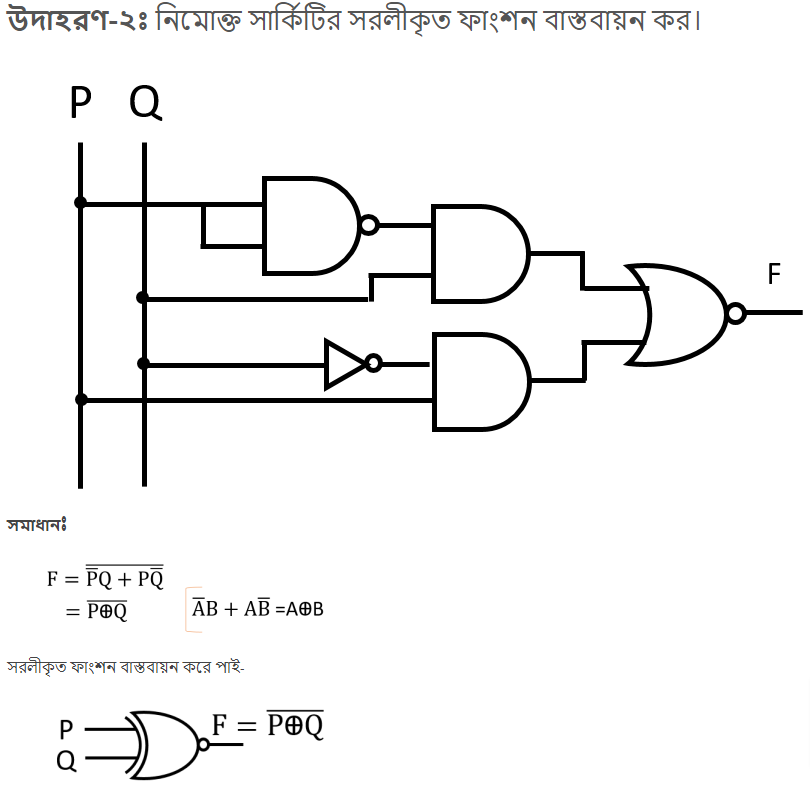
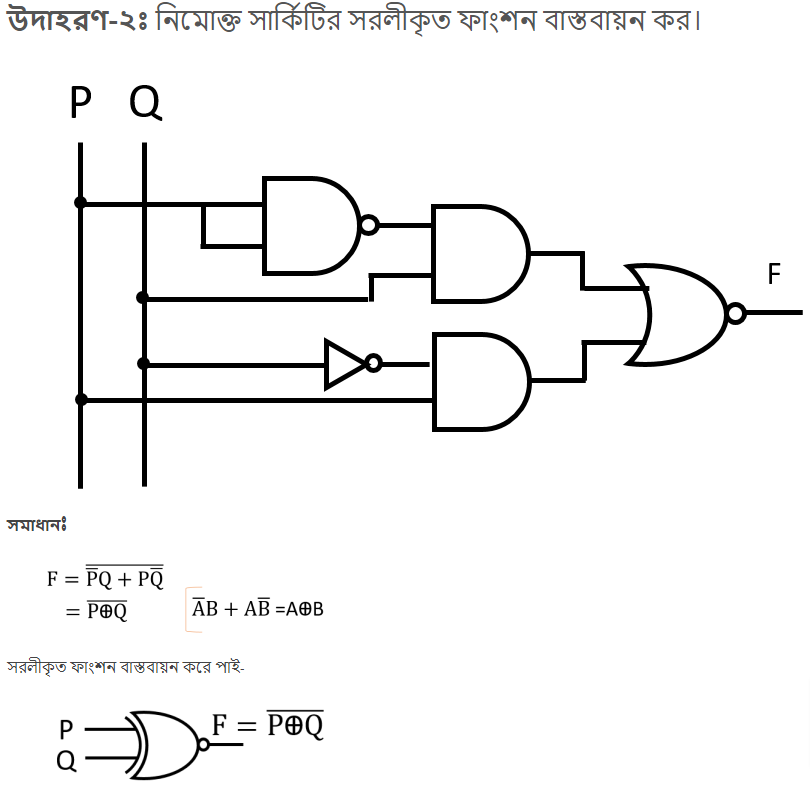
© Sajedul Islam Tushar
8 to 3 লাইন অথবা অক্টাল টু বাইনারি এনকোডার সার্কিট, সত্যক সারণি
© Sajedul Islam Tushar
হাফ অ্যাডার: সার্কিট, সত্যক সারণি, বাস্তবায়ন
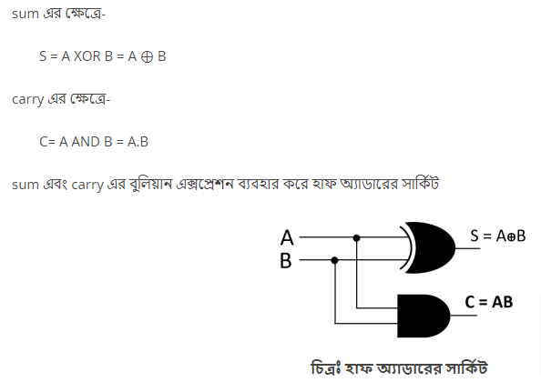
© Sajedul Islam Tushar
ফুল অ্যাডার: সার্কিট, সত্যক সারণি, বাস্তবায়ন
© Sajedul Islam Tushar
ফুল অ্যাডারের সার্কিট ( শুধুমাত্র মৌলিক গেইটের সাহায্যে বাস্তবায়ন)
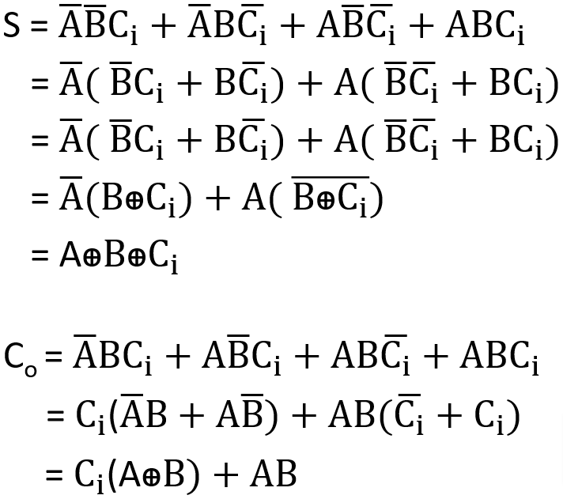
হাফ অ্যাডারের সাহায্যে ফুল অ্যাডার বাস্তবায়ন
© Sajedul Islam Tushar
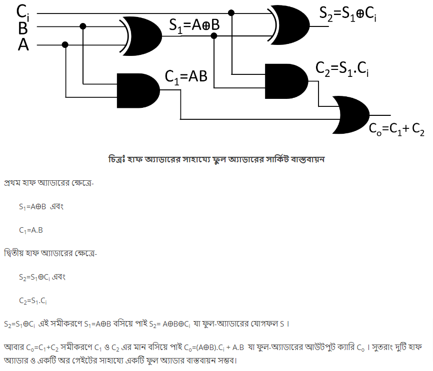
প্যারালাল বাইনারি অ্যাডার
প্যারালাল বাইনারি অ্যাডার n বিটের দুইটি বাইনারি সংখ্যার বিটগুলোকে সমান্তরালে যোগ করতে পারে। শুধুমাত্র ফুল-অ্যাডার অথবা হাফ-অ্যাডার এবং ফুল-অ্যাডারের সাহায্যে প্যারালাল বাইনারি অ্যাডার সার্কিট তৈরি করা যায়। প্যারালাল বাইনারি অ্যাডার দিয়ে n বিটের দুইটি বাইনারি সংখ্যা যোগ করার জন্য একটি হাফ-অ্যাডার ও (n-1) সংখ্যক ফুল-অ্যাডার ব্যবহৃত হয়। তবে n বিটের দুইটি বাইনারি সংখ্যার যোগ শুধুমাত্র n সংখ্যক ফুল-অ্যাডার ব্যবহার করেও করা যায়। এক্ষেত্রে প্রথম ফুল অ্যাডারের ইনপুট ক্যারিটি গ্রাউন্ডেড (ক্যারি জিরো) করে রাখা হয়।
সিরিয়াল বাইনারি অ্যাডার কী?
সিরিয়াল বাইনারি অ্যাডার n বিটের দুইটি বাইনারি সংখ্যার বিটগুলোকে বিট-বাই-বিট যোগ করে থাকে। একটি ফ্লিপ-ফ্লপ এবং একটি ফুল-অ্যাডার দিয়ে সিরিয়াল বাইনারি অ্যাডার সার্কিট তৈরি করা যায়। প্রতিটি ক্লক পালসে ফুল অ্যাডার সার্কিট দুইটি বাইনারি সংখ্যার একটি করে বিট যোগ করে sum এবং আউটপুট carry দেয়। পরবর্তী ক্লক পালসে পূর্ববর্তী আউটপুট ক্যারি এবং পরবর্তী দুইটি বিট যোগ করে sum এবং আউটপুট carry দেয়। এইভাবে n বিটের দুইটি বাইনারি সংখ্যার বিটগুলোকে বিট-বাই-বিট যোগ করে থাকে।
© Sajedul Islam Tushar
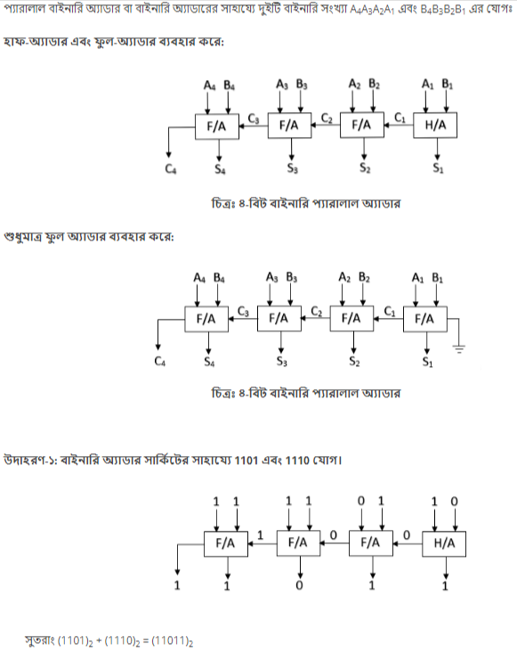
সর্বজনীন গেইট (Universal Gate) কী?
যে সকল গেইট দ্বারা মৌলিক গেইট সহ সকল প্রকার গেইট বাস্তবায়ন বা তাদের মতো কাজ করা যায়, সে সকল গেইটকে সর্বজনীন গেইট বলা হয়। NOR ও NAND গেইটকে সর্বজনীন গেইট বলা হয়।
রেজিস্টার (Register) কী?
রেজিস্টার (Resister) হলো একগুচ্ছ ফ্লিপ-ফ্লপ এবং লজিক গেইটের সমন্বয়ে গঠিত অস্থায়ী মেমোরি ডিভাইস যা একটি বাইনারী তথ্য সংরক্ষন করে রাখতে পারে। রেজিস্টারে ব্যবহৃত প্রতিটি ফিল্প-ফ্লপ একটি করে বাইনারি বিট ধারণ করতে পারে। n বিটের একটি বাইনারি তথ্য ধারণের জন্য n সংখ্যক ফ্লিপ-ফ্লপ বিশিষ্ট একটি রেজিস্টার প্রয়োজন হয়। রেজিস্টার মেমোরি ডিভাইস হিসেবে সিপিইউ এর ভিতরে থাকে এবং প্রসেসিং এর সময় অস্থায়ীভাবে ডেটা সঞ্চিত রাখে। রেজিস্টার সাধারনত ৮-বিট, ১৬- বিট, ৩২-বিটের হয়ে থাকে।
গঠন অনুসারে রেজিস্টার ২ ধরণের। যথা-
১. বাফার বা প্যারালাল লোড রেজিস্টার ২. শিফট রেজিস্টার (Shift Resister)
কাজের প্রকৃতির উপর ভিত্তি করে রেজিস্টার বিভিন্ন ধরণের হয়ে থাকে যেমন-
১। অ্যাকুমুলেটর রেজিস্টার ২। সাধারণ রেজিস্টার ৩। বিশেষ রেজিস্টার
© Sajedul Islam Tushar
কাউন্টার (Counter) কী?
কাউন্টার হচ্ছে এক প্রকার সিকোয়েন্সিয়াল সার্কিট যা তাতে প্রদানকৃত ইনপুট পালসের সংখ্যা গুণতে পারে । কাউন্টার যেকোনো নাম্বার সিকোয়েন্স যেমন- 1, 2, 3, 4 বা 2, 4, 6 বা অন্য কোনো নাম্বার গণনা করতে পারে। বাইনারি কাউন্টার শুধু বাইনারি গুনতে পারে। একটি কাউন্টার কত থেকে কত গুণতে পারে তা নির্ভর করে তার ডিজাইনের উপর। একটি n বিট বাইনারি কাউন্টার 0 থেকে 2n– 1 পর্যন্ত গুণতে পারে।
Note: কাউন্টার সাধারনত ২ প্রকার হয়ে থাকে: ১. সিনক্লোনাস (Synchronous) কাউন্টার ২. অ্যাসিনক্রোনাস (Asynchronous) কাউন্টার । BCD কাউন্টার যার সর্বাধিক স্টেট দশটি। কাউন্টার তৈরি করতে JK ফ্লিপ-ফ্লপ বেশি ব্যবহৃত হয়। T ফ্লিপ-ফ্লপ ব্যবহার করেও কাউন্টার তৈরি করা যায়।
সিনক্রোনাস (Synchronous) কাউন্টার কাকে বলে?
যে কাউন্টারে একটি মাত্র ক্লক পালস ব্যবহার করে কাউন্টারে ব্যবহৃত সবগুলো ফ্লিপ- ফ্লপ এর অবস্থার (State) পরিবর্তন ঘটানো যায় তাকে synchronous কাউন্টার বলে।
Note: রিং কাউন্টার, MOD-10 কাউন্টার ইত্যাদি।
অ্যাসিনক্রোনাস (Asynchronous) কাউন্টার কাকে বলে?
যে কাউন্টারে একটি ফ্লিপ-ফ্লপ এর output অন্য একটি ফ্লিপ-ফ্লপে ক্লক পালস হিসেবে ব্যবহৃত হয় তাকে Asynchronous কাউন্টার বলে।
Note: রিপল কাউন্টার (Ripple Counter)
মোড নাম্বার (Mode Number) কী?
একটি কাউন্টার সর্বাধিক যতগুলো সংখ্যা গুণতে পারে তাকে ঐ কাউন্টারের মডিউলাস (modulus) বা মোড নাম্বার বলে। কাউন্টারের মোড নম্বরকে কাউন্টার পালস ও বলা হয়।
Note: একটি n বিটের কাউন্টার 0 থেকে 2n-1 পর্যন্ত গুণতে পারে এবং এর মোড নম্বর হয় 2n
ক্লক পালস (Clock Pulse) কী?
ক্লক পালস হলো এক ধরনের সিগনাল বা ভোল্টেজের উপস্থিতি যা একটি নির্দিষ্ট সময় ধরে একই অবস্থায় থাকে এবং পরবর্তীতে আবার নির্দিষ্ট সময় ধরে বিপরীত অবস্থায় থাকে। বর্তমানে ডিজিটাল ডিভাইসকে সিনক্রোনাইজ করতে ক্লক পালস ব্যবহার করা হয়।
কোন যুক্তিতে ১+১=১০ ও ১+১=১ হয় ব্যাখ্যা কর।
বাইনারি সংখ্যা পদ্ধতিতে 1 + 1 = 10 হবে; কারণ বাইনারি সংখ্যা পদ্ধতির ভিত্তি হলো 2। ফলে এতে কেবল 0 ও 1 এই দুটি সংখ্যা ব্যবহৃত হয়ে থাকে। সাধারণভাবে দশমিক সংখ্যা পদ্ধতিতে 1 ও 1 যোগ করলে 2 হয়। কিন্তু বাইনারি সংখ্যা পদ্ধতিতে 2 বলে কোনো সংখ্যা নেই। এখানে 2 বলতে বাইনারি সংখ্যা পদ্ধতির তৃতীয় সংখ্যা তথা 10 কে বোঝাবে।
Boolean Algebra 1+1=1 হয়। কারন বুলিয়ান অ্যালজেব্রায় যে কোনো রাশির / সমীকরনের মান সত্য অথবা মিথ্যা হতে পারে। এই সত্য মিথ্যাকে ১ ও ০ দিয়ে প্রকাশ করা হয়ে থাকে। সত্য হলে ১, আর মিথ্যা হলে ০।
6+5+3 = 1110 হতে পারে ব্যাখ্যা কর।
উদ্দীপকে 6+5+3 = 1110 হতে পারে। এখানে, 6+5+3 = 14 এখন 14 একটি ডেসিমাল সংখ্যা। একে বাইনারী সংখ্যায় রূপান্তর করে পাওয়া যায়। (14) 10 = (1110)2
© Sajedul Islam Tushar
7+1=10 হয় – ব্যাখ্যা কর। অথবা 3+5=10 হয় – ব্যাখ্যা কর।
অক্টাল সংখ্যা পদ্ধতিতে ৭+ ১ = ১০ হবে; কারণ অক্টাল সংখ্যা পদ্ধতির ভিত্তি হলো ৮। ফলে এতে কেবল ০-৭ এই মোট ৮ টি সংখ্যা ব্যবহৃত হয়ে থাকে। সাধারণভাবে দশমিক সংখ্যা পদ্ধতিতে ৭ ও ১ যোগ করলে ৮ হয় কিন্তু বাইনারি সংখ্যা পদ্ধতিতে ৮ বলে কোন সংখ্যা নেই। এখানে ৮ বলতে অক্টাল সংখ্যা পদ্ধতির অষ্টম সংখ্যা তথা ১০ কে বোঝাবে। সাধারণভাবেও ডেসিমাল সংখ্যা পদ্ধতি অনুসারে ৭ ও ১ এর যোগফল যে ৮ হয়, তা অক্টাল সংখ্যার ১০ এর সমান।
(10101)2 কী ধরনের সংখ্যা বর্ণনা কর।
(10101)2 এই সংখ্যাটিতে ব্যবহৃত অঙ্কগুলো বাইনারি, অক্টাল, ডেসিমাল ও হেক্সা-ডেসিমাল এই চার সংখ্যা পদ্ধতিরই হতে পারে, কারণ সংখ্যাটি তৈরিতে ব্যবহৃত অংক প্রত্যেক সংখ্যা পদ্ধতির মধ্যেই বিদ্যমান। কিন্তু যেহেতু এখানে সংখ্যার সাথে এর বেজ 2 উল্লেখ আছে এবং বাইনারি সংখ্যা পদ্ধতিতে কেবল 0 ও 1 এই দুটি সংখ্যা কেবল ব্যবহৃত হয় তাই এখানে (10101)2 অবশ্যই বাইনারি সংখ্যা হবে।
(৭২)১০ সংখ্যাকে কম্পিউটার সরাসরি গ্রহণ করে না—ব্যাখ্যা কর।
কম্পিউটার একটি ডিজিটাল ডিভাইস। কম্পিউটারের অভ্যন্তরের সকল কাজ বাইনারি সংখ্যা পদ্ধতিতে হয়ে থাকে। বাইনারি সংখ্যা পদ্ধতি আবিষ্কৃত হওয়ার পর বুলিয় বীজগণিতের সত্য ও মিথ্যাকে বাইনারি 1 ও 0 দিয়ে পরিবর্তন করার মাধ্যমে কম্পিউটারে সমস্ত গাণিতিক সমস্যা সমাধান করা সম্ভব হয়ে ওঠে। ফলে আধুনিক কম্পিউটারের যাবতীয় অভ্যন্তরীণ কর্মকাণ্ডের জন্য বাইনারি সংখ্যা পদ্ধতি ব্যবহার হয়ে থাকে। এখানে (৭২)১০ একটি দশমিক সংখ্যা হওয়ায় কম্পিউটার এই সংখ্যাটিকে সরাসরি গ্রহণ করতে পারে না।
ডিজিটাল ইলেকট্রনিক্স ডিভাইসের অভ্যন্তরীণ কাজে সরাসরি দশমিক পদ্ধতি ব্যবহৃত হয় না কেন?
যে কোনো ইলেকট্রনিক্স ডিভাইস দুইটি মোডে কাজ করে একটি অন আর একটি অফ। বাইনারী সংখ্যা পদ্ধতিতে ০ আর ১ এই দুইটি সুংখ্যা ব্যবহার করা হয়। বাইনারির দুইটি সংখ্যা ব্যবহার করে ইলেকট্রনিক্স ডিভাইসের এই দুইটি অবস্থা খুব সহজে উপস্থাপন করে তাদের অভ্যন্তরীণ কার্যাবলি সম্পাদন করা যায়।
যদি কম্পিউটারে দশমিক সংখ্যা ব্যবহার করা হতো তাহলে দশমিক সংখ্যা পদ্ধতির (০-৯) দশটি সংখ্যার জন্য দশটি ভিন্ন ভিন্ন অবস্থা ব্যাখ্যা করতে হতো। এতে ইলেকট্রনিক্স বর্তনী অনেক জটিল হয়ে যেত। তাই ডিজিটাল ইলেকট্রনিক্স পদ্ধতিতে অভ্যন্তরীণ কাজে সরাসরি দশমিক পদ্ধতি ব্যবহৃত হয় না।
কম্পিউটারের অভ্যন্তরীণ কাজে বাইনারি পদ্ধতি ব্যবহারের কারণ ব্যাখ্যা কর।
অথবা, কম্পিউটারসহ / ইলেকট্রনিক ডিভাইসে বাইনারি সংখ্যা পদ্ধতি ব্যবহারের কারণ ব্যাখ্যা কর।
বিভিন্ন ইলেক্ট্রনিক ডিভাইস সাধারনত দুটি অবস্থায় কাজ করে একটি সুইচ অন আরেকটি অফ । বাইনারি পদ্ধতির দুটি প্রতীক ১ ও ০ বিদ্যুতের উপস্থিতি বা অনুপস্থিতি কিংবা হাই বা লো ভোল্টেজ এ দুই পৃথক অবস্থাকে কার্যকরভাবে প্রকাশ করতে সক্ষম। বাইনারীর ০ ও ১ সংখ্যা দ্বারা এই অন আর অফ অবস্থা খুব সহজে উপস্থাপন করে তাদের অভ্যন্তরীণ কার্যাবলি সম্পাদন করা যায়। বাইনারি সংখ্যা পদ্ধতি আবিষ্কৃত হওয়ার পর বুলিয় বীজগণিতের সত্য ও মিথ্যাকে বাইনারি 1 ও 0 দিয়ে পরিবর্তন করার মাধ্যমে কম্পিউটারে সমস্ত গাণিতিক সমস্যা সমাধান করা সম্ভব হয়ে ওঠে। ফলে আধুনিক কম্পিউটারের যাবতীয় অভ্যন্তরীণ কর্মকাণ্ডের জন্য বাইনারি সংখ্যা পদ্ধতি ব্যবহার হয়ে থাকে।
© Sajedul Islam Tushar
- বাইনারি সংখ্যা পদ্ধতির দুটি বিট ০ ও ১ কে ইলেকট্রনিক যন্ত্রে সিগন্যাল আকারে ব্যবহার করা যায়।
- ইলেকট্রনিক যন্ত্রাংশ বাইনারি মোডে কাজ করে।যেমন- একটি ম্যাগনেটিক কোর clock wise ও Anti clock wise ম্যাগনেটাইজ হতে পারে, যা বাইনারি বিট 1 ও ০দ্বারা প্রকাশকরা যায়।
- বাইনারি সিস্টেমে দুটি অবস্থা থাকায় জর্জ বুল এর সত্য ও মিথ্যা এ দুই যুক্তি বা লজিকের ওপর ভিত্তি করে সৃষ্ট লজিক গেইট দ্বারা এর সার্কিট ডিজাইন সহজ হয়।
কম্পিউটারের ক্ষেত্রে ডিজিটাল সিগন্যাল উপযোগী কেন? -ব্যাখ্যা কর।
বিভিন্ন ইলেক্ট্রনিক ডিভাইসগুলোতে ব্যবহৃত সার্কিটসমূহ মূলত সুইচ অন বা অফ এরকম সর্বোচ্চ দুটো স্টেট বা অবস্থায় তাদের অভ্যন্তরীণ কার্যাবলি সম্পাদন করে থাকে। যেহেতু কম্পিউটার ইলেকট্রিক সিগন্যালের সাহায্যে কাজ করে, তাই বাইনারি সিগন্যাল (০ ও ১) কে সহজেই ইলেকট্রিক সিগন্যালের সাহায্যে প্রকাশ করা যায়। অর্থাৎ বাইনারি পদ্ধতির দু’টি প্রতীক ১ ও ০ বিদ্যুতের উপস্থিতি বা অনুপস্থিতি কিংবা হাই বা লো ভোল্টেজ এই দুই পৃথক অবস্থাকে কার্যকরভাবে প্রকাশ করতে সক্ষম। তাই বলা যায় কম্পিউটারের ক্ষেত্রে ডিজিটাল সিগন্যাল উপযোগী । যেহেতু কম্পিউটার ইলেকট্রিক সিগন্যালের সাহায্যে কাজ করে, তাই বাইনারি সিগন্যাল (০ ও ১) কে সহজেই ইলেকট্রিক সিগন্যালের সাহায্যে প্রকাশ করা যায়।
কম্পিউটারে অষ্টাল ও হেক্সাডেসিমাল সংখ্যা পদ্ধতি ব্যবহারের কারণ – ব্যাখ্যা কর।
কম্পিউটারে অনেক বিট নিয়ে কাজ করার সময় ভুল ত্রুটি এড়াতে কয়েকটি বিটকে নিয়ে একত্রে একটি সেট বা গ্রুপ বানিয়ে এদের উপস্থাপন করার কৌশল ব্যবহার করা হয়। বাইনারি ডিজিট বা বিটগুলোর তিনটি বা চারটিকে একত্রে নিয়ে একটি করে গ্রুপ বা সেট আকারে ব্যবহারের সুবিধা গ্রহণ করতেই এর অভ্যন্তরে অক্টাল বা হেক্সাডেসিমাল সংখ্যা পদ্ধতি ব্যবহার করা হয়। বড় বড় বাইনারি সংখ্যার ক্ষেত্রে এর তিনটি বা চারটি করে বিট নিয়ে একটি করে গ্রুপ তৈরি করে সংখ্যাকে উপস্থাপন করলে তা ব্যবহারের ক্ষেত্রে সহজ হয়ে ওঠে। যেমন: (1101010111001111), বাইনারি সংখ্যাটিকে (1101 0101 1100 1111), এভাবে গ্রুপ করে অতঃপর এদের প্রত্যেক গ্রুপের জন্য কোনো অক্টাল বা হেক্সাডেসিমাল সংখ্যা ব্যবহার করে তা উপস্থাপন করা হলে এটি অনেক সহজবোধ্য মনে হবে। এভাবে অক্টাল বা হেক্সাডেসিমাল পদ্ধতি কমিপউটারের অভ্যন্তরে বাইনারি বা ডেসিমাল সংখ্যার উপস্থাপনায় ব্যাপক বাইনারি ডিজিট বা বিটের ব্যবহার কমিয়ে এটিকে আরও অনেক সহজ ও স্মার্ট করে তোলে।
নন-পজিশনাল পদ্ধতি বড় ধরনের সংখ্যা প্রকাশের উপযোগী নয় কেন? – ব্যাখ্যা কর।
যে পদ্ধতিতে সংখ্যার অবস্থানের কোন মান নেই অর্থাৎ সংখ্যার অবস্থান পরিবর্তন হলেও মানের কোন পরিবর্তন হয় না তাকে নন পজিশনাল সংখ্যা পদ্ধতি বলে। এই পদ্ধতিতে ছোট সংখ্যা প্রকাশ করা সহজ হলেও বড় সংখ্যার ক্ষেত্রে এই সংখ্যা নিজেই অনেক বড় আকার ধারণ করে। তাই বড় ধরণের সংখ্যা প্রকাশে এই পদ্ধতি উপযোগী নয়।
BCD কোড কোন সংখ্যা পদ্ধতি নয় – ব্যাখ্যা কর।
BCD এর পূর্ণ রূপ হলো Binary Coded Decimal। এটি মূলত ৪-বিটের একটি কোড। ডেসিমেল সংখ্যার (০ থেকে ৯ পর্যন্ত) প্রতিটি অঙ্ককে তার সমতুল্য চার-বিট বাইনারি সংখ্যা দ্বারা উপস্থাপন করার জন্য BCD কোড ব্যবহার করা হয়। এটি সাধারণত ডেসিমেল সংখ্যার প্রতিটি অংককে বাইনারি ০ ,১ এ এনকোড করার একটি পদ্ধতি। সুতরাং বলা যায় BCD কোড কোন সংখ্যা পদ্ধতি নয়।
© Sajedul Islam Tushar
২ এর পরিপূরক করলে সংখ্যার শুধু চিহ্নের পরিবর্তন হয় – ব্যাখ্যা কর।
২ এর পরিপূরক করলে সংখ্যার শুধু চিহ্নের পরিবর্তন হয় উক্তিটি সঠিক। যদি ধরি ১২ একটি ডেসিমাল সংখ্যা এর বাইনারি মান ১১০০। ধনাত্নক ১২ এর রেজিষ্টার মান +১২= ০০০০১১০০
১ এর পরিপূরক করে পাই= ১১১১০০১১ ২ এর পরিপূরক করলে পাওয়া যায়= ১১১১০১০০
+১২ এর ২ এর পরিপূরকের মানকে ৮ বিট রেজিষ্টারে স্টোর করলে দেখা যাবে রেজিষ্টারের চিহ্ন বিট ১ হয়। ফলে কম্পিউটারে সংখ্যাটি ঋনাত্নক হিসেবে গন্য হবে। তাই বলা যায় ২ এর পরিপূরক করলে সংখ্যার শুধু চিহ্নের পরিবর্তন হয়।
২-এর পরিপূরক ডিজিটাল বর্তনীকে সরল করে—ব্যাখ্যা কর।
২-এর পরিপূরক যথার্থই ডিজিটাল বর্তনীকে সরল করে। কম্পিউটার বিভিন্ন গাণিতিক সমস্যার সমাধান যোগের মাধ্যমে করে থাকে। গাণিতিক কাজ বলতে +, -, ×, / এর কাজকে বুঝায়। এতে প্রত্যেকটি কাজের জন্য আলাদা আলাদা সার্কিটের প্রয়োজন, যা খুব ব্যয়বহুল ও জটিল। তাই কম্পিউটারে ২ এর পরিপূরক গঠনের ফলে সব কাজই যোগের মাধ্যমে করা সম্ভব।
এর ফলে কম্পিউটারে সার্কিটের মাত্রা কমে, দামে সস্তা, দ্রুতগতিতে কাজ করতে সাহায্য করে ও সার্কিটের জটিলতা কমায়।
বিয়োগের কাজ যোগের মাধ্যমে সম্ভব- ব্যাখ্যা কর।
২-এর পরিপূরক গঠনের ফলে বিয়োগের কাজ যোগের মাধ্যমে করা যায়। ২-এর পরিপূরক গঠনে যোগ ও বিয়োগের জন্য একই বর্তনী ব্যবহার করা যায়। কোনো বাইনারি সংখ্যার ১ এর পরিপূরক মানের সাথে ১ যোগ করলে ২ এর পরিপূরক মান পাওয়া যাবে। এক্ষেত্রে ঋণাত্মক সংখ্যার বাইনারি ফর্মকে প্রথমে ১ এর পরিপূরকে পরিণত করে নিতে হবে। এরপর ১ এর পরিপূরকের সাথে ১ যোগ করে ২ এর পরিপূরক নির্ণয় করতে হবে। তারপর যে সংখ্যা হতে বিয়োগ করতে হবে সেই সংখ্যার বাইনারি মানের সাথে যোগ করতে হবে। সুতরাং উপরের নিয়মানুযায়ী বিয়োগের কাজ যোগের মাধ্যমে করা সম্ভব।
বাইনারি কোড এবং BCD কোডের মধ্যে কোনটিতে বেশি মেমোরি/বিটের প্রয়োজন? ব্যাখ্যা কর।
BCD এবং বাইনারি কোডের মধ্যে সাধারনত BCD কোডে বিটের সংখ্যা বেশি হয়। কারন BCD মূলত একটি কোড যেটি ব্যবহার করা হয় ডেসিমেল সংখ্যার (০ থেকে ৯ পর্যন্ত) প্রতিটি অঙ্ককে তার সমতুল্য চার-বিট বাইনারি সংখ্যা দ্বারা উপস্থাপন করার জন্য। অন্য দিকে বাইনারি হলো একটি সংখ্যা পদ্ধতি। যদি (১০৩)১০ সংখ্যাটির বাইনারি করা হয় তাহলে মান হবে (1100111)২ । অন্য দিকে সংখ্যাটির BCD মান হবে (000100000011) BCD । সংখ্যা দুটির মানের দিকে লক্ষ্য করলে দেখা যাবে যে BCD কোডে বিটের সংখ্যা বেশি। তাই বলা যায় BCD এবং বাইনারি কোডের মধ্যে BCD কোডে বিটের সংখ্যা বেশি হয়।
বিশ্বের সকল ভাষাকে কোডভুক্ত করা সম্ভব হয়েছে—ব্যাখ্যা কর।
Unicode দ্বারা বিশ্বের সকল ভাষাকে কম্পিউটার কোডভুক্ত করে কম্পিউটারের মাধ্যমে উপস্থাপন করা যায়। বিশ্বের সকল ভাষাকে কম্পিউটারে কোডভুক্ত করার জন্য বড় বড় কোম্পানিগুলো একটি মান তৈরি করেছে যাকে ইউনিকোড বলা হয়। ইউনিকোড-এর পূর্ণ অর্থ Universal Code বা সর্বজনীন কোড। বর্তমানে বিশ্বব্যাপী প্রচলিত আসকি (ASCII) কোডের পাশাপাশি ইউনিকোড সিস্টেম চালু হয়েছে। ইউনিকোড হচ্ছে ১৬ বিটের একটি কোড। বিভিন্ন ধরনের ক্যারেক্টার ও টেক্সটকে প্রকাশ করার জন্য ইউনিকোড ব্যবহার করা হয়। ইউনিকোডের মাধ্যমে ২১৬ = ৬৫৫৩৬টি অদ্বিতীয় চিহ্নকে নির্দিষ্ট করা যায়।
© Sajedul Islam Tushar
৩-ভিত্তিক সংখ্যা পদ্ধতি ব্যাখ্যা কর।
অথবা, অক্টাল একটি ৩ বিটের কোড– ব্যাখ্যা কর।
যে সংখ্যা পদ্ধতিতে ০-২ পর্যন্ত মোট ৩টি মৌলিক ডিজিট বা অঙ্ক ব্যবহৃত হয়ে থাকে তাকে ৩ ভিত্তিক সংখ্যা পদ্ধতি বলে । ৩ ভিত্তিক সংখ্যা পদ্ধতির ভিত্তি বা বেজ হলো ৩ অর্থাৎ এখানে । এই সংখ্যা পদ্ধতির প্রথম দশটি সংখ্যা নিচে ক্রমানুযায়ী বর্ণিত হলো। যথা- ০, ১, ২,১০, ১১, ১২, ২০, ২১, ২২ ও ১০০।
৩ টি বাইনারি বিটকে একত্রে গ্রুপ করে তা কোনো অক্টাল সংখ্যা দিয়ে প্রকাশ করলে একে অক্টাল কোড হিসেবে অভিহিত করা হয়। অক্টালকে তিন বিটের কোড বলা হয়, কেননা ৩টি বাইনারি বিটকে সহজেই একটি একক অক্টাল ডিজিট দিয়ে প্রকাশ করা সম্ভব। অক্টাল কোড কম্পিউটারগুলোর জন্য জনপ্রিয় হয়ে ওঠে এর মূল কারণ হলো বাইনারি সংখ্যা পদ্ধতির ভিত্তি হলো ২ এবং অক্টাল সংখ্যা পদ্ধতির ভিত্তি হলো ৮ আমরা জানি,2৩ =৮, অর্থাৎ অক্টাল সংখ্যা পদ্ধতির ভিত্তি ৮ কে বাইনারি সংখ্যা পদ্ধতির ভিত্তি 2 এর গুণিতক আকারে প্রকাশ করা যায়। এর ফলে বাইনারির তিনটি বিট বা বাইনারি ডিজিটকে একটি মাত্র অক্টাল ডিজিট বা অঙ্ক দিয়ে উপস্থাপন করা যাবে। এ কারণেই অক্টালকে তিন বিটের কোড হিসেবে অভিহিত করা হয়।
হেক্সাডেসিমাল একটি 4 বিটের কোড– ব্যাখ্যা কর।
বাইনারী চার বিটের গ্রুপকে সহজেই একটি হেক্সাডেসিমাল ডিজিট দিয়ে উপস্থাপন করা যায়। এরকম 4টি বাইনারি বিটকে গ্রুপ করে তা হেক্সাডেসিমাল সংখ্যা দিয়ে প্রকাশ করলে, একে হেক্সাডেসিমাল কোড
হিসেবে অভিহিত করা হয়। অর্থাৎ, 0 থেকে F পর্যন্ত হেক্সাডেসিমাল সংখ্যাগুলো দ্বারা সকল চার বিটের গ্রুপ তথা হাফ বাইটকে উপস্থাপন করা যাবে। এছাড়াও দেখা যায় হেক্সাডেসিমালে ব্যবহৃত মৌলিক ডিজিটের সংখ্যা হলো 16, যা 2 ভিত্তিক সংখ্যা পদ্ধতির ডিজিটের সাথে সরাসরি একটি সম্পর্ক স্থাপন করতে সক্ষম; যেমন 24 = 16। এই সম্পর্কের কারণেই হেক্সাডেসিমালের যে কোনো সিঙ্গেল ডিজিট ব্যবহার করে যে কোনো চার বিটের বাইনারিকে প্রকাশ করা সম্ভব হয়। এ কারণে হেক্সাডেসিমাল কোডকে চার বিটের কোড বলা হয়।
ইউনিকোড “বাংলা” ভাষা বুঝতে পারে—ব্যাখ্যা কর।
Unicode “বাংলা” ভাষা বুঝতে পারে কারণ ইউনিকোড দ্বারা বিশ্বের সকল ভাষাকে কম্পিউটার কোডভুক্ত করে কম্পিউটারের মাধ্যমে তা উপস্থাপন করা যায়। বিশ্বের সকল ভাষাকে কম্পিউটারে কোডভুক্ত করার জন্য বড় বড় কোম্পানিগুলো একটি মান তৈরি করেছে যাকে ইউনিকোড বলা হয়। এর পূর্ণ অর্থ Universal Code বা সর্বজনীন কোড। বর্তমানে বিশ্বব্যাপী প্রচলিত আসকি কোডের পাশাপাশি ইউনিকোড সিস্টেম চালু হয়েছে। ইউনিকোড হচ্ছে ১৬ বিট কোড। বিভিন্ন ধরনের ক্যারেক্টার ও টেক্সটকে প্রকাশ করার জন্য ইউনিকোড ব্যবহার করা হয় যার মধ্যে বাংলা ভাষা অন্যতম। ইউনিকোডের মাধ্যমে ২১৬= ৬৫৫৩৬টি অদ্বিতীয় চিহ্নকে নির্দিষ্ট করা যায়।
NOR/ NAND গেইট একটি সর্বজনীন গেইট– ব্যাখ্যা কর।
মৌলিক গেইট (অর, অ্যান্ড এবং নট) দ্বারা সকল গেইট ও যেকোন যুক্তিবর্তনী (Logic Circuit) তৈরি বা বাস্তবায়ন করা যায়। আবার কোনো গেইট যদি মৌলিক গেইটগুলোর মতো কাজ করে তাহলে সেই গেইটা দ্বারাও যে কোনো গেইট ও যুক্তিবর্তনী তৈরি করা সম্ভব। তাহলে বলা যায় যে, “যে গেইট দ্বারা মৌলিক গেইটগুলো (অর, অ্যান্ড এবং নট) বাস্তবায়ন করা যায়, তাকে সর্বজনীন গেইট বলা হয়।” ন্যান্ড ও নর গেইট দ্বারা মৌলিক গেইট (অর, অ্যান্ড এবং নট) সহ অন্য সকল গেইট বাস্তবায়ন করা যায়-বিধায় ন্যান্ড ও নর গেইটকে সর্বজনীন গেইট বলা হয়।
© Sajedul Islam Tushar
একাধিক মৌলিক গেইটের সমন্বয়ে যৌগিক গেইট তৈরি হয় – ব্যাখ্যা কর।
দুই বা ততোধিক মৌলিক গেইটের সমন্বয়ে যে গেইট তৈরি হয়, তাকে যৌগিক গেইট বলা হয়। অর্থাৎ যৌগিক গেইটকে ভাঙ্গলে একাধিক মৌলিক গেইট পাওয়া যায়। যেমন – AND ও NOT গেইটের সমন্বয়ে NAND গেইট তৈরি হয়। NAND গেইটকে ভাঙ্গলে দুটি মৌলিক গেইট পাওয়া যায়। সুতরাং NAND gate একটি যৌগিক গেইট।
সাধারণ বীজগণিত ও বুলিয়ান বীজগণিত এক নয় – ব্যাখ্যা কর।
সাধারণ বীজগণিত ও বুলিয়ান বীজগণিত এক নয় কারণ:
- সাধারণ অ্যালজেবরায় 0 থেকে 9 পর্যন্ত মোট দশটি সংখ্যা ব্যবহার করা হয়। অন্যদিকে বুলিয়ান অ্যালজেবরায় শুধু 0 ও 1 এই দু’টি সংখ্যা ব্যবহার করা হয়।
- সাধারণ অ্যালজেবরায় গাণিতিক কাজে + – x / এই চারটি নিয়ম মেনে চললেও বুলিয়ান অ্যালজেবরায় (+) ও (x) ব্যতীত অন্য কোন নিয়ম নেই।
- যোগের ক্ষেত্রে সাধারণ অ্যালজেবরায় 1 + 1 = 2 হলে ও বুলিয়ান অ্যালজেবরায় 1 +1 = 1 হয়।
- বুলিয়ান অ্যালজেবরা সত্য ও মিথ্যা এই দুইটির উপর নির্ভর করলেও সাধারণ অ্যালজেবরা সত্য ও মিথ্যার উপর নির্ভর করে না। সুতরাং বলা যায়, সাধারণ ও বুলিয়ান অ্যালজেবরা এক নয় ।
কোডেড ডেটাকে আনকোডেড ডেটায় রূপান্তরের ডিভাইসটি ব্যাখ্যা কর।
অথবা, যান্ত্রিক ভাষাকে মানুষের ভাষায় বোঝানোর উপযোগী লজিক সার্কিট ব্যাখ্যা কর।
কোডেড ডেটাকে আনকোডেড ডেটায় রূপান্তরের ডিভাইসটি হলো ডিকোডার। ডিকোডার এমন একটি লজিক সার্কিট, যা কোন কোড (Code)-কে ডিকোড (Decode) করতে পারে। ইহা এমন একটি ইলেকট্রনিক যন্ত্র বা ডিভাইস যা কম্পিউটারের বোধগম্য ভাষাকে মানুষের বোধগম্য ভাষায় রূপান্তর করে। ডিকোডার ইনপুটের সংখ্যা n হলে তার আউটপুট সংখ্যা = 2n হবে এবং আউটপুট লাইনে যে কোনো একটি আউটপুট 1 হলে বাকী সব আউটপুট 0 হবে। ডিকোডারের আউটপুট অবস্থা সর্বদা তার ইনপুট অবস্থার উপর নির্ভরশীল।
একটি 4-বিট বাইনারী কাউন্টার কতটি সংখ্যা গুণতে পারে—ব্যাখ্যা কর।
যদি কোনো একটি বাইনারি কাউন্টারের বিট সংখ্যা n হয়, তবে তা n সংখ্যক ফ্লিপ-ফ্লপ এবং সংশ্লিষ্ট লজিক গেইট দ্বারা গঠিত হবে যা 0 থেকে (2n–1) পর্যন্ত পর্যায়ক্রমিক সংখ্যা গুণতে পারে। সুতরাং একটি ৪ বিট বাইনারি কাউন্টার 0 থেকে 24 – 1 = 15 পর্যন্ত সংখ্যা তথা ১৬টি সংখ্যা গুণতে পারে।
রেজিস্টার মেমোরি ডিভাইসের মত আচরণ করে কিন্তু মেমোরি ডিভাইস নয় – ব্যাখ্যা কর।
রেজিস্টার হলো একাধিক ফ্লিপ-ফ্লপের সমন্বয়ে তৈরি এক প্রকার মেমোরি ডিভাইস, যা কতগুলো বিটকে অল্প সময়ের জন্য ধারণ বা সংরক্ষণ করে রাখতে পারে কিন্তু মেমোরি ডিভাইসের মত সবসময় একই ডেটা ধারণ করতে পারে না। তাই বলা যায় রেজিস্টার মেমোরি ডিভাইসের মতো আচরণ করে কিন্তু মেমোরি ডিভাইস নয়।